허리, 목·어깨, 무릎, 발목처럼 일상 동작에서 아픈 분을 위한 안내입니다. 좋은꿈참사랑한의원은 '어디가 아프다'보다 '어떤 동작에서 불편한가'를 먼저 여쭙고, 위험 신호가 없는지 확인한 뒤 모든 분의 맥을 짚으며 아픈 곳 주변과 잠·피로까지 넓게 살핍니다.

아픈 곳과 원인이 있는 곳은 다를 수 있습니다
목, 어깨, 허리, 무릎의 통증에는 근육, 인대, 관절, 신경 등 여러 구조가 관여합니다. 통증이 느껴지는 곳과 통증에 영향을 주는 곳이 반드시 같지는 않습니다. 그래서 아픈 곳만 보지 않고 몸이 어떻게 움직이는지 함께 살핍니다.
이런 분께
- 목·허리 통증이 좋아졌다 나빠졌다를 반복하는 분
- 오래 앉아 일하는 직장인, 수험생
- 어깨가 굳어 팔을 올리기 불편한 분
- 계단을 오르내릴 때 무릎이 불편한 분
- MRI에서 디스크 소견을 듣고 걱정되는 분
- 통증 때문에 걷기와 활동이 줄어든 어르신
- 허리를 삐끗하거나 발목을 접질려 움직이기 힘든 분
- 팔을 들 때 어깨가 걸리거나 밤에 어깨가 아파 깨는 분
부위별로 먼저 읽어 보세요
통증 글이 많아 어디서부터 읽어야 할지 막막하시다면, 아래 길게 정리한 대표 글부터 보세요. 각 글에는 스스로 점검하는 방법, 진료실에서 여쭙는 것, 먼저 병원 확인이 필요한 신호를 함께 적어 두었습니다.
- 허리·다리 저림: 허리 디스크 초기 신호와 다리 저림은 어떻게 구분하나요?
- 허리를 갑자기 삐끗했을 때: 허리를 삐끗해 움직이기 힘든 급성 요추 염좌는 첫 며칠 어떻게 살피나요?
- 걸으면 다리가 저려 쉬어야 할 때: 걸으면 다리가 저려 자꾸 쉬어야 하는 척추관 협착증은 어떻게 살피나요?
- 어깨가 굳어 팔이 안 올라갈 때: 어깨가 굳어 팔이 올라가지 않는 오십견(유착성 관절낭염)은 어떻게 살피나요?
- 팔을 들 때 어깨가 걸릴 때: 팔을 들 때 어깨가 걸리듯 아픈 충돌증후군·회전근개 문제는 어떻게 살피나요?
- 계단에서 무릎이 시큰할 때: 계단에서 시큰하고 자주 붓는 무릎 퇴행성 관절염은 어떻게 살피나요?
- 발목을 자주 접질릴 때: 발목을 자주 접질리는 반복 발목 염좌와 발목 불안정은 어떻게 살피나요?
- 팔꿈치·손목: 팔꿈치 바깥쪽·안쪽이 시큰한 테니스엘보와 골프엘보는 어떻게 살피나요?, 새벽에 손이 저려 깨는 손목터널증후군은 어떻게 살피나요?
- 목에서 팔로 저릴 때: 목에서 팔로 저림이 내려올 때(목디스크 의심)는 어떤 점을 먼저 확인하나요?
이렇게 진료합니다
다리 힘이 빠지거나 대소변 조절이 어렵다면 바로 큰 병원 진료가 필요합니다.
- 문진: 언제부터, 어떤 동작에서, 어디가 아픈지 여쭙니다.
- 진찰: 움직임, 압통, 근력, 저림·감각 같은 신경학적 증상을 확인합니다.
- 초음파 평가: 필요하면 근육·힘줄·인대의 상태를 초음파로 함께 봅니다.
- 치료 계획: 침, 약침, 추나, 체외충격파, 물리치료, 한약 가운데 지금 필요한 치료를 고르고 설명해 드립니다.
- 재평가: 다음 진료 때 변화를 확인하고 계획을 조정합니다.
통증을 동작으로 나눠 보는 이유
같은 무릎 통증도 계단을 오를 때와 내려갈 때, 앉았다 일어설 때 불편한 위치가 다릅니다. 동작을 기준으로 이야기하면 관련된 근육·관절·자세를 좁혀 가기 쉽고, 다음 방문에서 달라진 점도 같은 동작으로 확인할 수 있습니다.
통증이 시작된 시점, 하루 중 언제 심한지, 쉬면 나아지는지도 중요한 단서입니다. 아침에 뻣뻣하다가 움직이면 풀리는지, 오후로 갈수록 심해지는지에 따라 살필 부분이 달라집니다.
갑자기 다친 통증과 오래된 통증은 다르게 봅니다
허리를 삐끗했거나 발목을 접질린 것처럼 갑자기 생긴 통증은 처음 며칠이 중요합니다. 뼈나 신경에 문제가 없는지 먼저 확인하고, 붓기와 근육 긴장을 다스리며 아프지 않은 범위에서 움직임을 이어 가는 쪽으로 계획을 세웁니다. 이 시기에는 상태가 하루하루 달라 짧은 간격으로 확인하는 경우가 많습니다.
몇 달씩 이어진 통증은 아픈 자리만큼이나 그동안 바뀐 자세와 걸음, 잠과 피로, 통증을 피하느라 덜 쓰게 된 근육을 함께 봅니다. 오래된 통증일수록 한 번에 바꾸려 하기보다 생활에서 바꿀 것 하나와 진료를 함께 이어 가며 같은 동작으로 변화를 확인합니다.
상담에서 자주 듣는 통증
통증은 아픈 곳 한 군데보다 연결된 부위에서 시작되는 경우도 있습니다. 예를 들어 무릎 통증이 발목이나 골반의 움직임과 함께 나타나기도 해 주변까지 함께 봅니다.
- 오래 앉았다 일어설 때 허리 통증
- 고개를 숙이고 일한 뒤 목·어깨 뻐근함
- 계단을 내려갈 때 무릎 앞쪽 통증
- 아침 첫발을 디딜 때 발뒤꿈치 통증
- 팔을 옆으로 들 때 어깨 높이에서 걸리는 통증
- 같은 발목을 자주 접질리는 불안함
먼저 이렇게 여쭙니다
- 언제부터, 어떤 동작에서 아픈가요?
- 밤에 쉬어도 아픈가요?
- 저림이나 힘 빠짐이 함께 있나요?
- 최근 넘어지거나 부딪힌 적이 있나요?
- 대소변이 평소와 같은가요?
- 열이 나거나 이유 없이 체중이 줄지는 않았나요?
생활에서 먼저 해 볼 것
찜질은 붓고 뜨거운 급성기에는 차갑게, 오래된 뻐근함에는 따뜻하게 하는 것이 일반적인 기준입니다. 어느 쪽이 맞는지 헷갈리면 진료 때 여쭤보세요.
- 30~40분마다 일어나 자세 바꾸기
- 아픈 동작은 줄이되 몸을 완전히 멈추지는 않기
- 모니터를 눈높이에 맞추기
- 통증이 심해지는 동작과 시간을 메모하기
한의원에서 함께 살피는 것
아픈 지점만이 아니라 주변 근육과 자세, 걷는 모습까지 봅니다. 필요하다고 판단될 때 초음파로 조직 상태를 확인하고 침, 약침, 추나, 체외충격파, 맥스톰 자기장 치료기, IS400 극초단파 온열 장비 등을 상태에 맞게 이어서 씁니다. 반응을 보며 방법을 조정하고, 충분한 반응이 없으면 다른 방법이나 다른 의료기관 진료를 안내합니다.
초음파와 체외충격파는 언제 쓰나요
모든 분이 같은 검사와 치료를 받지는 않습니다. 힘줄·인대·근육의 모양이나 관절에 물이 찼는지를 볼 필요가 있다고 판단될 때 초음파로 함께 확인합니다. 힘줄이 크게 찢어졌거나 영상 검사가 더 필요해 보이면 정형외과 진료를 먼저 안내합니다.
체외충격파는 어깨 힘줄, 팔꿈치, 발바닥, 무릎 주변처럼 힘줄과 인대 쪽 불편이 오래 남아 있을 때 진찰 뒤 상의하는 방법 가운데 하나입니다. 혈액을 묽게 하는 약을 드시거나 최근 주사를 맞았다면 미리 알려 주세요.
한의학에서는 통증을 이렇게 함께 봅니다
한의학에서는 통증을 기혈의 흐름과 근육·힘줄의 긴장, 몸의 온기와 함께 봅니다. 비 오는 날 더 쑤시는지, 따뜻하게 하면 편한지, 피곤할 때 심해지는지 같은 질문을 드리는 이유입니다. 이런 답을 진찰 내용과 함께 보고 침, 추나, 온열 등 방법을 정합니다.
- 날씨나 계절에 따라 달라지는지
- 따뜻하게 하면 편해지는지
- 피곤하거나 잠이 부족할 때 심해지는지
통증으로 오셔도 맥을 짚는 이유
좋은꿈참사랑한의원에서는 통증으로 오신 분도 모두 맥을 짚습니다. 통증이 오래가면 잠이 얕아지고, 잠이 얕으면 같은 통증도 더 크게 느끼게 됩니다. 몸이 찬지, 소화는 어떤지, 피로가 얼마나 쌓였는지도 통증이 오래가는 데 함께 얽혀 있기 때문입니다.
그래서 허리는 허리대로 동작과 진찰로 보고, 몸은 몸대로 맥과 문진으로 봅니다. 둘을 나란히 놓을 때 침과 추나 같은 치료만 할지, 잠과 몸 상태를 위한 한약 상담을 함께 할지가 정해집니다.
- 밤에 통증 때문에 몇 번 깨는지
- 날씨가 궂거나 피곤한 날 더 아픈지
- 소화와 대소변, 몸의 온기는 어떤지
이럴 때는 다른 진료를 먼저 받으세요
- 다리 힘이 빠지거나 대소변 조절이 어려울 때: 응급실
- 넘어진 뒤 붓고 모양이 달라 보일 때: 영상검사 먼저
- 열이 나면서 아플 때
- 밤에 쉬어도 심해지거나 체중이 이유 없이 줄 때
- 팔이나 어깨 통증과 함께 가슴이 답답하고 숨이 찰 때: 가까운 응급실
- 발목을 다친 뒤 네 걸음도 체중을 싣지 못할 때: 영상검사 먼저
- 무릎이 갑자기 붉게 붓고 뜨거우며 열이 날 때
좋은꿈참사랑한의원 진료는 이렇게 진행됩니다
접수 후 상담에서 불편한 동작을 듣고, 필요한 진찰을 거쳐 오늘 상태에 맞는 치료를 진행합니다. 치료 뒤 같은 동작으로 다시 확인하고, 다음 진료에서는 그 변화부터 이어서 여쭙습니다.
치료 계획은 한 번에 정해 두기보다 반응을 보며 함께 조정합니다. 지난번과 비교해 덜 불편해진 동작, 그대로인 동작을 말씀해 주시면 다음 진료에 반영합니다.
상도동·노량진에서
상도동은 언덕과 계단이 많아 무릎과 허리 이야기가 자주 나오고, 노량진 학원가와 사무실에서는 오래 앉아 있는 자세 때문에 목·어깨가 굳기 쉽습니다. 좋은꿈참사랑한의원은 상도역 3번 출구와 노량진역 3번 출구(마을버스 동작01번) 어느 쪽에서든 오기 쉽고, 평일 저녁 8시까지 진료합니다.
자주 묻는 질문
MRI에서 디스크가 있다고 하면 꼭 치료해야 하나요?
영상 소견과 실제 통증은 항상 일치하지는 않습니다. 영상 결과와 함께 증상, 진찰 소견, 생활에서 불편한 정도를 종합해 방향을 정합니다. 다른 병원 검사 결과는 가져오시면 참고하겠습니다.
근육만 풀면 되는 것 아닌가요?
근육 긴장이 원인인 경우도 있지만 관절, 인대, 신경, 자세 습관이 함께 얽혀 있는 경우가 많습니다. 원인을 구분해야 치료도 달라집니다.
무릎이 아프면 운동을 쉬어야 하나요?
상태에 따라 다릅니다. 무작정 쉬기만 하면 근력이 떨어질 수 있어, 통증 정도에 맞는 활동 범위를 함께 정합니다.
상도역 근처에서 허리 통증 진료를 하는 한의원이 있나요?
좋은꿈참사랑한의원이 상도역 3번 출구에서 약 400m 거리에 있습니다. 진료시간은 평일 09:30~20:00(점심 13:00~14:00), 토·일·공휴일 09:30~15:00입니다.
어깨가 아픈데 초음파로 볼 수 있나요?
필요하다고 판단될 때 초음파로 통증 부위의 조직 상태를 확인합니다. 모든 분이 같은 검사를 받지는 않습니다.
통증 치료는 여러 가지를 한 번에 하나요?
필요에 따라 조합합니다. 많이 받는다고 좋은 것이 아니라, 오늘 상태에 맞는 치료를 고르는 것이 중요합니다. 침, 약침, 추나, 체외충격파, 온열 장비 등을 필요한 만큼만 연결합니다.
병원에서 찍은 MRI 결과를 가져가야 하나요?
판독지나 진단서가 있으면 가져오세요. 이전 검사와 진료 내용을 이어서 보는 데 참고합니다.
아픈데 운동해도 되나요?
통증이 심해지는 동작은 줄이고, 어떤 움직임이 괜찮은지는 진찰 후 함께 정합니다.
주말에도 통증 진료를 하나요?
토·일·공휴일에도 오전 9시 30분부터 오후 3시까지 진료하며, 이때는 점심시간이 없습니다.
주차할 수 있나요?
주차 가능 여부와 위치는 방문 전 02-815-7510으로 전화하시면 안내해 드립니다.
오래된 통증도 상담할 수 있나요?
네. 오래된 통증은 몸이 통증에 예민해져 있는 경우도 있어 반응을 보며 방법을 조정하고, 필요하면 다른 의료기관 진료를 안내합니다.
직장인인데 퇴근 후에 갈 수 있나요?
평일은 오후 8시까지 진료합니다. 네이버 예약이나 02-815-7510으로 미리 예약하실 수 있습니다.
오십견은 저절로 풀린다던데 기다려도 되나요?
시간이 지나며 움직임이 돌아오는 경우가 많다고 알려져 있지만 1~2년 넘게 걸리기도 하고 일부 제한이 남는 분도 있습니다. 지금이 아픈 시기인지 굳는 시기인지 나눠 보고, 밤잠과 일상 동작을 지키는 방법을 함께 정합니다. 자세한 내용은 오십견 글에 정리해 두었습니다.
허리를 삐끗했는데 언제 가야 하나요?
다리 힘이 빠지거나 대소변이 불편하거나 사타구니 감각이 둔하면 가까운 응급실이 먼저입니다. 그런 신호가 없다면 아파서 움직이기 힘든 첫 며칠 안에 진찰을 받아 지금 상태와 피할 동작을 확인해 두시길 권합니다.
감수: 좋은꿈참사랑한의원 대표원장 이종호 · 마지막 확인 2026-11-27 · 일반적인 건강 정보이며 진단·치료를 대신하지 않습니다.
통증·추나 글 모아 보기 (186편)

추운 아침 차 앞유리에 낀 성에와 눈을 긁어 낸 뒤 팔꿈치 바깥과 어깨 뒤쪽이 시큰할 때는 어떻게 살피나요?
한파가 이어지는 아침, 언 차 앞유리를 서둘러 긁어 내면 손목을 젖힌 채 꽉 쥐고 팔을 멀리 뻗는 동작이 반복되어 팔꿈치 바깥과 어깨 뒤쪽이 시큰해지기 쉽습니다. 며칠은 쥐고 비트는 동작을 줄이고, 다음 성에부터는 덮개와 히터로 먼저 녹인 뒤 몸을 옮겨 가며 짧게 긁는 순서로 바꿔 보세요. 손가락 저림이나 힘 빠짐, 가슴 답답함이 함께 오면 먼저 진료를 받습니다.
수정 2026-11-27

무릎이 아파 살을 빼라는 말을 들었는데 운동은 엄두가 나지 않을 때, 무엇부터 하나요?
무릎이 아픈데 체중을 줄이라는 말을 들었다면, 아픈 무릎으로 운동부터 늘리기보다 배가 고프지 않은데 습관처럼 먹는 것을 줄이는 데서 시작해 볼 수 있습니다. 수술을 하든 하지 않든 체중을 함께 챙기는 이유를 대표원장의 설명으로 정리했습니다.
수정 2026-11-27

수능이 끝나고 처음 아르바이트를 시작한 뒤 손목과 허리, 발바닥이 아플 때는 어떻게 살피나요?
1년 가까이 책상 앞에 앉아 지내던 몸으로 갑자기 하루 몇 시간씩 서서 쟁반을 들고 상자를 옮기면 손목 엄지 쪽과 허리, 발바닥과 종아리가 한꺼번에 아프기 쉬워, 신발과 쉬는 시간, 드는 자세부터 바꿔 봅니다. 손가락이 저리고 힘이 빠지거나 다리로 저림이 내려가면 먼저 진료를 받고, 소변이 콜라처럼 진한 갈색으로 나오면 바로 가까운 응급실로 갑니다.
수정 2026-11-27

넘어지며 손을 짚거나 손목을 접질린 뒤 시큰한 손목 염좌는 어떻게 살피나요?
손을 짚고 넘어지거나 무거운 것을 들다 손목이 꺾인 뒤 붓고 시큰한 손목 염좌. 골절과 어떻게 구분해 보는지, 첫 며칠은 어떻게 지내는지, 오래 시큰할 때 한의원에서 무엇을 여쭙고 함께 살피는지 정리했습니다.
수정 2026-11-26

손등이나 손목 안쪽에 말랑한 혹이 생겼다 작아졌다 하는 결절종은 어떻게 살피나요?
결절종은 손목 관절이나 힘줄 둘레에 끈적한 물이 고여 생기는 말랑한 혹으로, 크기가 변하기도 합니다. 다른 혹과 구분하는 법, 혹을 함부로 누르지 말아야 하는 이유, 진찰과 초음파로 함께 살피는 것을 정리했습니다.
수정 2026-11-26

넘어져 손목이 부러진 뒤 깁스를 풀었는데 손목이 굳고 힘이 없을 때 재활은 어떻게 하나요?
손목 골절 뒤 깁스를 풀면 손목이 잘 젖혀지지 않고, 손가락이 붓고, 쥐는 힘이 약해진 느낌이 남기 쉽습니다. 정형외과의 경과 확인을 따르면서 일상과 한의원에서 무엇을 함께 살피는지 정리했습니다.
수정 2026-11-26

푸시업이나 바닥을 짚을 때 손목 등쪽이 아픈 것은 어떻게 살피나요?
팔굽혀펴기나 요가에서 바닥을 짚을 때 손목 등쪽이 찌릿하다면 손목을 젖힌 채 버티는 동작이 부담일 수 있습니다. 흔한 이유와 다른 손목 통증과의 차이, 손목을 덜 젖히는 방법을 정리했습니다.
수정 2026-11-26

손가락을 굽혔다 펼 때 딸깍 걸리는 방아쇠수지는 어떻게 살피나요?
방아쇠수지는 손가락을 굽히는 힘줄이 손바닥 쪽 통로에서 걸려 딸깍 소리와 함께 펴지지 않는 상태입니다. 손 쓰는 습관과 아침 뻣뻣함을 함께 살피고, 필요하면 초음파로 힘줄의 모습을 함께 봅니다.
수정 2026-11-26
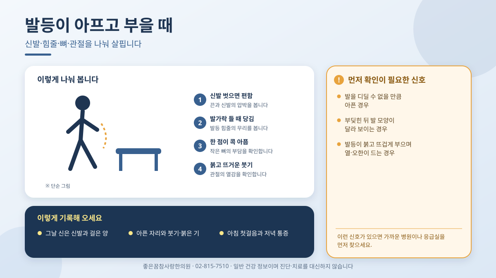
발등이 아프고 붓는 발등 통증은 신발·힘줄·뼈 가운데 어디서 오는지 어떻게 살피나요?
발등이 욱신거리고 부을 때는 신발 끈의 압박, 발등 힘줄의 무리, 작은 뼈에 쌓인 부담, 관절의 열감을 나눠 살핍니다. 아픈 자리와 때를 확인하는 법과 신발·걷기 습관 관리를 정리했습니다.
수정 2026-11-26
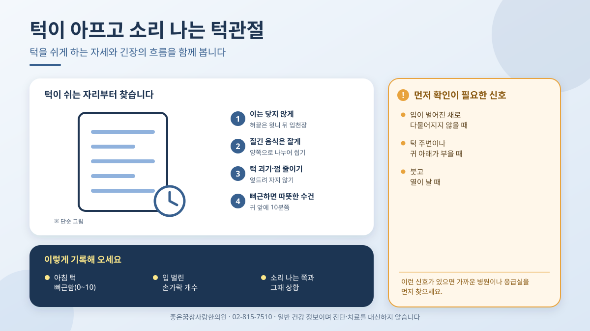
턱에서 소리가 나고 입이 잘 안 벌어지는 턱관절 장애는 어떻게 살피나요?
턱관절 장애는 귀 앞 턱관절과 씹는 근육이 아프고, 입을 벌릴 때 소리가 나거나 걸리는 상태입니다. 이 악물기·한쪽 씹기·자세·잠과 목·어깨 긴장을 함께 살핍니다.
수정 2026-11-26

병뚜껑을 열거나 집게로 집을 때 엄지 뿌리가 아픈 엄지 관절염은 어떻게 살피나요?
엄지손가락이 손목과 만나는 뿌리 자리가 시큰하고 집는 힘이 약해지는 엄지 뿌리 관절염. 드퀘르뱅 건초염과 어떻게 구분하는지, 왜 이 관절이 먼저 닳는지, 손을 아끼는 요령과 한의원에서 함께 살피는 것을 정리했습니다.
수정 2026-11-26

팔을 들면 손이 저리고 어깨 앞이 당기는 흉곽출구증후군은 목디스크와 어떻게 다르고 어떻게 살피나요?
머리를 감거나 선반에 물건을 올리려 팔을 들면 새끼손가락 쪽이 저리고 팔이 금세 무거워진다면, 목과 가슴 사이 좁은 길을 지나는 신경과 혈관을 살펴볼 수 있습니다. 목디스크·손목터널과의 차이와 자세 관리를 정리했습니다.
수정 2026-11-26
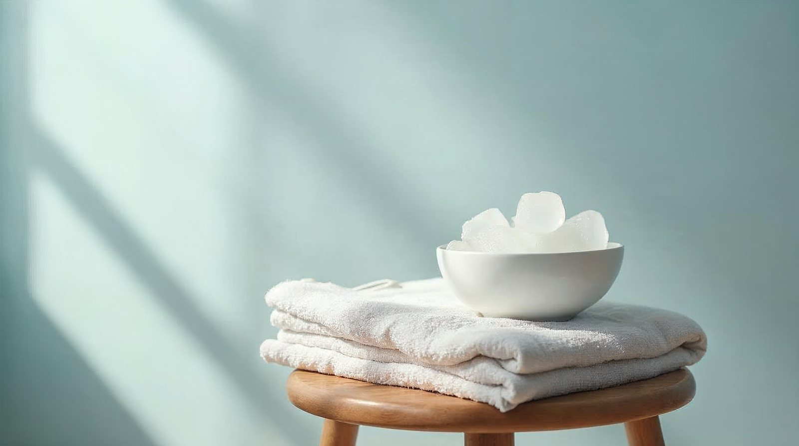
허벅지 앞을 세게 부딪혔거나 공을 차다 뜨끔했을 때, 허벅지 앞 근육 타박·파열은 어떻게 살피나요?
축구를 하다 상대 무릎에 허벅지를 맞거나, 공을 차는 순간 허벅지 앞이 뜨끔할 때가 있습니다. 근육 타박과 근육 파열이 어떻게 다른지, 첫 며칠과 회복기에 무엇을 살피고 어떻게 다시 움직이는지 정리했습니다.
수정 2026-11-26

손목 새끼손가락 쪽이 시큰하고 돌릴 때 딸깍거리는 TFCC 통증은 어떻게 살피나요?
문고리를 돌리거나 바닥을 짚을 때 손목 새끼손가락 쪽이 찌릿하고 딸깍거리는 TFCC 통증. 손목 바깥쪽 연골 구조가 왜 다치는지, 다른 손목 통증과 어떻게 구분하는지, 한의원에서 무엇을 여쭙고 함께 살피는지 정리했습니다.
수정 2026-11-26

팔꿈치 바깥쪽·안쪽이 시큰한 테니스엘보와 골프엘보는 어떻게 살피나요?
물건을 들거나 행주를 짤 때 팔꿈치 바깥쪽이 시큰하면 테니스엘보, 안쪽이면 골프엘보를 생각합니다. 다친 뒤 붓거나 열이 나고 새끼손가락이 저리면 먼저 확인합니다.
수정 2026-11-26

안쪽 복사뼈 아래가 저리고 발바닥이 화끈거리는 발목 터널 증후군(족근관 증후군)은 어떻게 살피나요?
발목 터널 증후군은 안쪽 복사뼈 뒤 좁은 길에서 신경이 눌려 발바닥이 저리고 화끈거리는 상태입니다. 족저근막염·허리에서 오는 저림·당뇨 신경병증과 구분하는 법과 신발, 진찰에서 함께 살피는 것을 정리했습니다.
수정 2026-11-26
수영을 하고 나면 어깨가 아픈 '수영 어깨'는 어떻게 살피나요?
자유형이나 접영을 하고 나면 어깨 앞과 옆이 욱신거리고, 팔을 머리 위로 올릴 때 걸리는 느낌이 생기기 쉽습니다. 수영 어깨가 왜 생기는지, 영법과 횟수에서 무엇을 살피고 진료실에서는 어떻게 보는지 정리했습니다.
수정 2026-11-26
공부와 운동을 같이 하다 어깨·등이 아플 때, 운동 강도는 어떻게 조절하나요?
오래 앉아 공부하다 운동하는 분의 어깨·등 통증은 운동을 끊기보다 일상 걷기는 그대로 두고 하던 운동을 70% 정도로 낮춘 뒤, 다음 날 아침 반응을 보며 줄이기·바꾸기·쉬기를 정합니다.
수정 2026-11-26
척추관 협착증과 허리디스크, 내 다리 저림은 어느 쪽에 가까울까요?
다리가 저릴 때 협착증인지 디스크인지 궁금해하시는 분이 많습니다. 아픈 자세와 걷는 모습, 나이와 생긴 계기로 두 흐름을 나눠 보는 법과 진료실에서 여쭙는 것, 일상 관리를 정리했습니다.
수정 2026-11-26
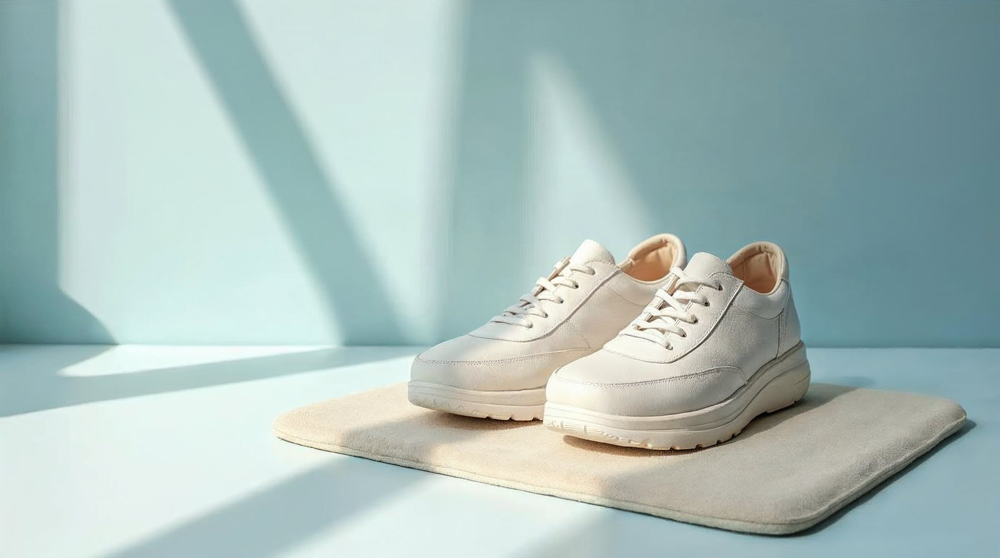
하루 종일 서서 일하는 직업이라 저녁마다 발바닥이 화끈하고 다리가 무거울 때는 어떻게 살피나요?
판매, 매장, 간호, 강의, 공장 일처럼 하루 종일 서서 일하면 저녁마다 발바닥이 화끈하고 종아리가 붓고 무거운 이유와 족저근막염·하지정맥류·부종을 나눠 보는 법, 일하며 해 볼 수 있는 요령과 한의원 진료를 정리했습니다.
수정 2026-11-26

척추 분리증이 있다는 말을 들었을 때, 허리는 어떻게 쓰고 무엇을 살피나요?
허리 사진을 찍었더니 척추 분리증이 있다는 말을 들으셨나요. 허리뼈 뒤쪽 고리의 가는 부분이 떨어져 있는 상태가 무엇인지, 전방전위증과 어떻게 다른지, 운동과 생활은 어떻게 이어 가는지 정리했습니다.
수정 2026-11-26
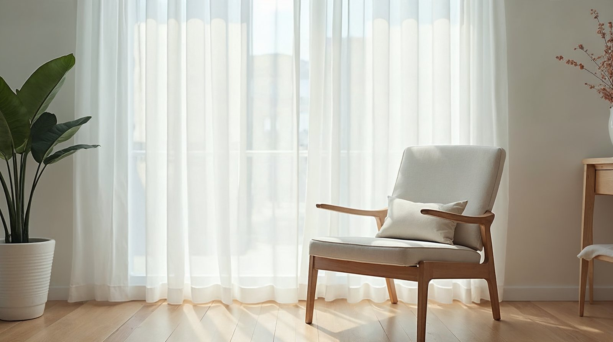
허리뼈가 앞으로 밀렸다는 척추전방전위증은 어떻게 살피나요?
척추전방전위증은 허리뼈 하나가 아래 뼈보다 앞으로 밀려난 상태로, 사진 소견과 실제 통증이 늘 같지는 않습니다. 밀린 정도와 원인, 다리 저림, 오래 서 있을 때의 불편을 나눠 보고, 허리를 받치는 생활과 근육을 함께 살핍니다.
수정 2026-11-26

걸으면 다리가 저려 자꾸 쉬어야 하는 척추관 협착증은 어떻게 살피나요?
조금 걸으면 엉덩이와 다리가 저려 쉬어야 하고 앉거나 허리를 숙이면 풀린다면 척추관 협착증을 생각합니다. 대소변이 불편하거나 다리 힘이 빠지면 척추 진료나 가까운 응급실이 먼저입니다.
수정 2026-11-26
조기축구나 풋살을 하고 난 뒤 발목과 허벅지가 아플 때는 어떻게 살피나요?
주말 아침 조기축구나 퇴근 뒤 풋살을 하고 나면 발목이 시큰하고 허벅지가 묵직해지기 쉽습니다. 접질림과 근육 당김, 단순한 근육통을 어떻게 나눠 보고, 다음 경기 전까지 무엇을 살피는지 정리했습니다.
수정 2026-11-26
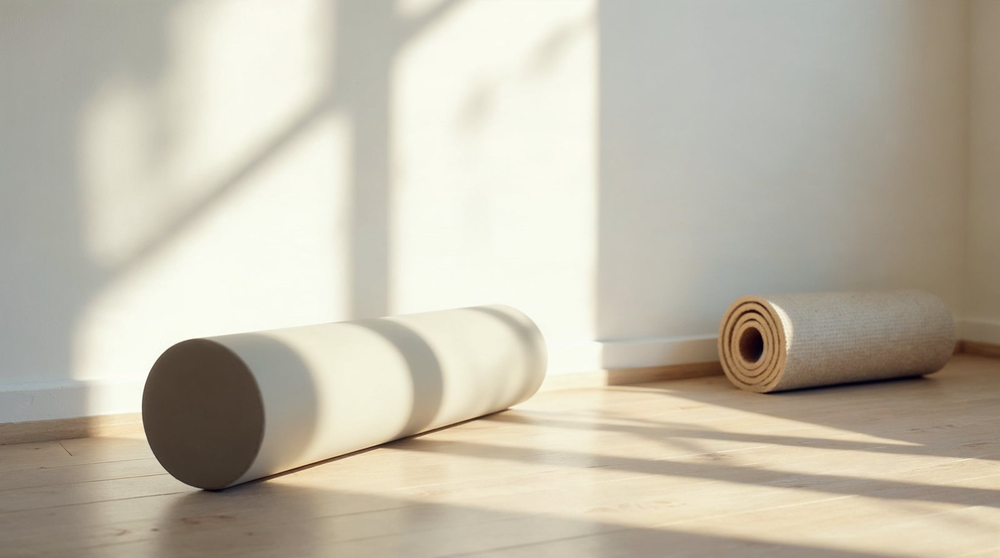
어깨를 돌릴 때 날개뼈에서 딸깍, 드드득 소리가 나는 탄발 견갑은 어떻게 살피나요?
어깨를 돌리거나 팔을 앞으로 뻗을 때 날개뼈 안쪽에서 딸깍, 드드득 하는 소리와 걸리는 느낌이 날 때가 있습니다. 탄발 견갑이 왜 생기는지, 소리만 있을 때와 통증이 함께 있을 때의 차이, 생활과 진료에서 살피는 점을 정리했습니다.
수정 2026-11-26
다리를 돌리거나 걸을 때 고관절에서 '딱' 소리가 나는 탄발 고관절은 어떻게 살피나요?
걷거나 다리를 들어 올릴 때 엉덩이 옆이나 사타구니 깊은 곳에서 딱, 툭 소리와 걸리는 느낌이 날 때 탄발 고관절을 생각합니다. 소리가 나는 자리별 차이, 아픔이 함께 있을 때 살필 것, 생활 관리를 정리했습니다.
수정 2026-11-26

옆구리가 결리고 아플 때 근육·갈비뼈·콩팥·피부 가운데 어디서 오는지 어떻게 나눠 살피나요?
옆구리 결림은 근육이 놀란 경우가 많지만 갈비뼈, 등, 콩팥, 피부 신경, 소화기에서 오기도 합니다. 아픈 모양과 자세, 소변·피부 변화로 갈래를 나눠 보는 법과 한의원에서 함께 살피는 부분을 정리했습니다.
수정 2026-11-26
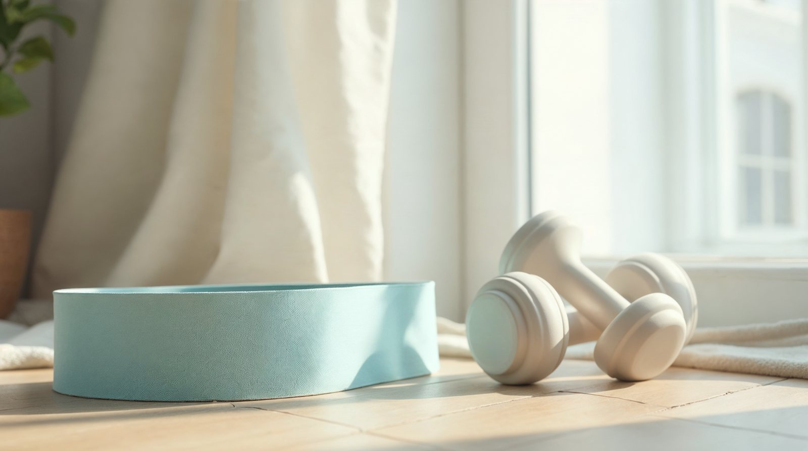
어깨를 돌릴 때 어깨 관절에서 뚝뚝 소리가 나고 아플 때는 무엇을 살피나요?
팔을 돌리거나 들어 올릴 때 어깨에서 뚝뚝 소리가 나고 통증까지 따라오면 걱정이 커집니다. 아프지 않은 소리와 통증이 함께 오는 소리를 어떻게 나누는지, 날개뼈 소리와는 어떻게 다른지, 집에서와 진료실에서 살피는 것을 정리했습니다.
수정 2026-11-26
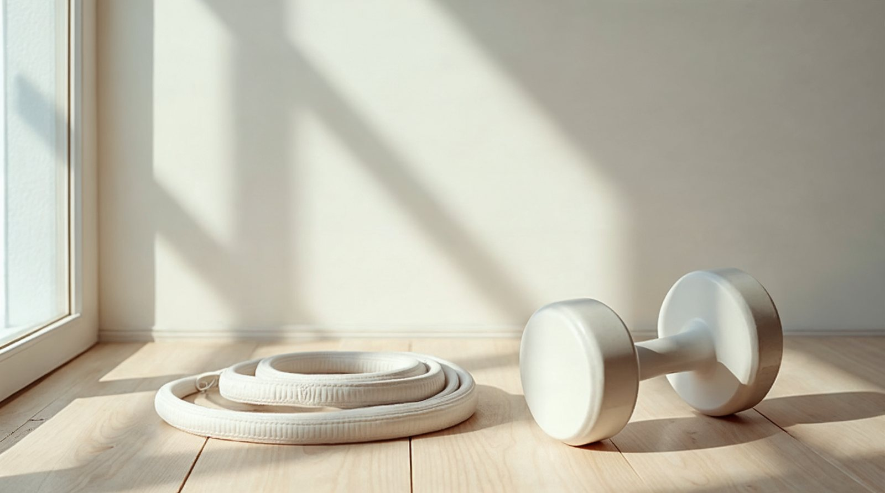
어깨가 한 번 빠진 뒤 자꾸 빠질 것 같고 불안할 때, 어깨 불안정은 어떻게 살피나요?
어깨가 한 번 빠졌다가 들어간 뒤로 팔을 들거나 뻗을 때마다 다시 빠질 것 같은 불안감이 남을 때가 있습니다. 어깨 불안정이 왜 생기는지, 정형외과 진료와 함께 생활과 재활에서 무엇을 살피는지 정리했습니다.
수정 2026-11-26

팔을 들 때 어깨가 걸리듯 아픈 충돌증후군·회전근개 문제는 어떻게 살피나요?
팔을 옆으로 들 때 어깨 높이쯤에서 걸리듯 아프고 밤에 눕기 힘들다면 어깨 힘줄(회전근개)이 끼이거나 지친 경우를 생각해 볼 수 있습니다. 오십견과 구분하는 법과 팔 쓰는 요령을 정리했습니다.
수정 2026-11-26
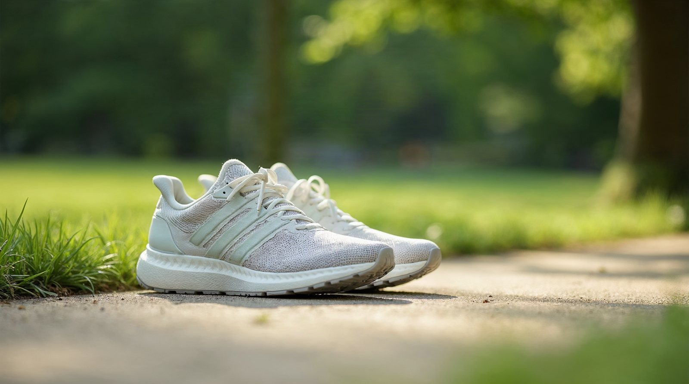
달리기를 시작한 뒤 정강이 안쪽이 욱신거리는 신스플린트는 어떻게 살피나요?
달리기나 줄넘기를 늘린 뒤 정강이 안쪽 뼈 가장자리가 길게 욱신거린다면 신스플린트일 수 있습니다. 왜 생기는지, 피로골절과 어떻게 나눠 보는지, 달리기를 줄이고 다시 늘리는 순서를 정리했습니다.
수정 2026-11-26
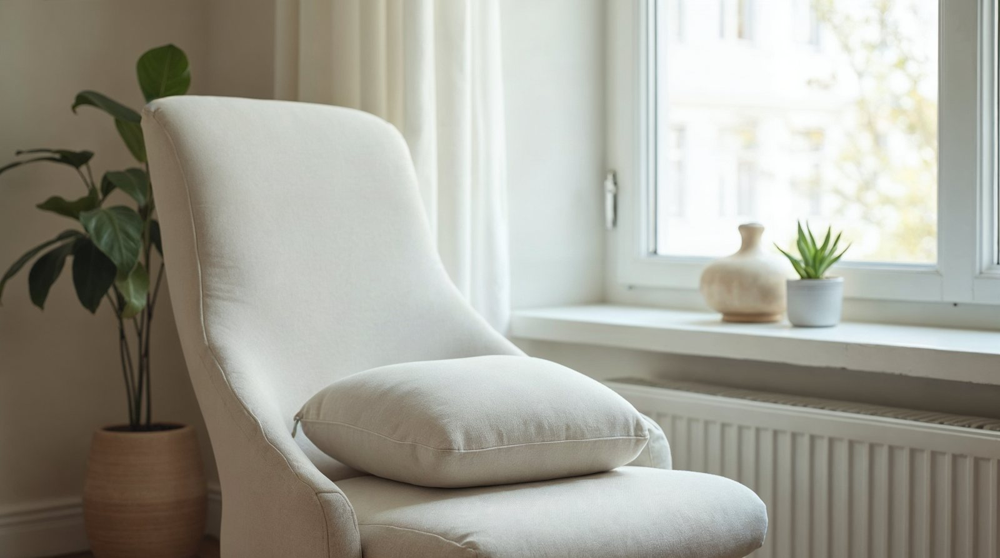
엉덩이에서 다리 뒤로 찌릿하게 뻗치는 좌골신경통은 어디서 오고 어떻게 살피나요?
엉덩이에서 허벅지 뒤, 종아리까지 찌릿하게 뻗치는 통증은 흔히 좌골신경통이라 부릅니다. 신경이 어디서 눌리거나 예민해졌는지 나눠 보는 법과 진료실에서 여쭙는 것, 일상에서 덜 자극하는 자세를 정리했습니다.
수정 2026-11-26

허리 아래 엉치 한쪽이 콕 찌르듯 아픈 천장관절 통증은 어떻게 살피나요?
허리띠 아래 엉덩이 위쪽 한 곳이 찌르듯 아프고, 돌아눕거나 차에서 내릴 때 더 불편한 천장관절 통증. 허리 디스크와 어떻게 구분하는지, 왜 생기는지, 생활에서 조심할 것과 한의원에서 함께 살피는 것을 정리했습니다.
수정 2026-11-26
숨을 크게 쉬거나 몸을 돌릴 때 갈비뼈가 찌릿한 늑간신경통·늑연골염은 어떻게 살피나요?
숨을 깊게 들이쉬거나 몸을 비틀 때 갈비뼈 사이가 찌릿하고, 가슴뼈 옆을 누르면 아픈 갈비뼈 통증. 늑간신경통과 늑연골염이 어떻게 다른지, 왜 생기는지, 생활에서 조심할 것과 한의원에서 함께 살피는 것을 정리했습니다.
수정 2026-11-26

갈비뼈를 부딪히거나 금이 간 뒤 숨 쉬고 돌아누울 때마다 아플 때는 어떻게 살피나요?
넘어지거나 부딪힌 뒤 갈비뼈가 아파 기침, 재채기, 돌아눕기가 힘들 때가 있습니다. 갈비뼈 타박과 금 간 뒤의 회복 흐름, 숨쉬기와 잠자리 요령, 회복기에 한의원에서 함께 살피는 점을 정리했습니다.
수정 2026-11-26
류마티스 관절염으로 치료 중일 때 한의원에서는 무엇을 함께 살피나요?
류마티스 관절염은 면역이 관절막을 공격해 손가락·손목 같은 작은 관절이 양쪽으로 붓고 아침에 오래 굳는 병입니다. 류마티스내과 치료를 중심에 두고, 굳음과 피로, 잠과 식사, 손을 쓰는 습관을 함께 살핍니다.
수정 2026-11-26
자고 일어나면 목이 돌아가지 않는 목 담·목 염좌가 자꾸 반복될 때는 어떻게 살피나요?
목에 담이 걸렸다는 것은 목 주변 근육과 관절이 갑자기 굳어 고개를 돌리기 어려운 상태를 흔히 이르는 말입니다. 첫 며칠 지내는 법, 목디스크와 구분하는 기준, 자꾸 반복되는 이유를 잠·자세·긴장에서 함께 찾습니다.
수정 2026-11-26
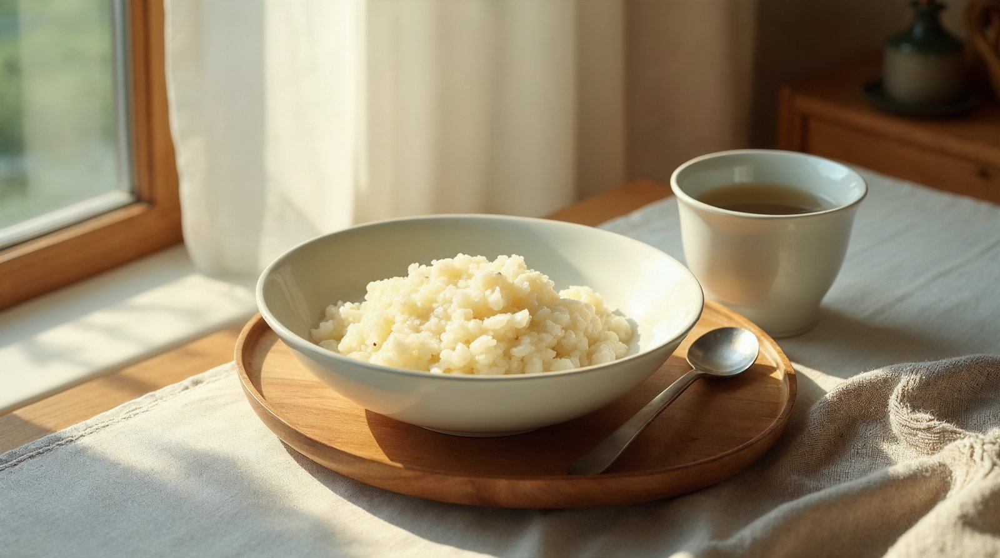
하품하거나 크게 웃다 턱이 빠지는 습관성 턱관절 탈구는 왜 되풀이되고, 어떻게 살피나요?
크게 하품하거나 웃다가 턱이 빠져 입이 다물어지지 않았던 경험이 되풀이되면 입을 벌리는 일 자체가 두려워집니다. 턱이 왜 빠지는지, 턱관절 장애와는 어떻게 다른지, 되풀이를 줄이는 생활 습관과 진료실에서 살피는 것을 정리했습니다.
수정 2026-11-26

발목을 자주 접질리는 반복 발목 염좌와 발목 불안정은 어떻게 살피나요?
같은 발목을 자주 접질린다면 다친 인대와 발목의 균형 감각이 충분히 돌아오기 전에 다시 쓰기 시작한 경우가 많습니다. 처음 다친 날 살필 것과 한 발 서기 같은 균형 연습을 함께 정리했습니다.
수정 2026-11-26

허리 한쪽 옆이 결리고 돌아눕기 힘든 요방형근 통증은 어떻게 살피나요?
허리 한쪽 옆, 갈비뼈 아래와 골반 위 사이가 결리고 돌아눕거나 일어날 때 찌르듯 아프다면 요방형근을 함께 살핍니다. 콩팥이나 디스크 통증과 나눠 보는 법, 진료실에서 여쭙는 것과 일상 관리를 정리했습니다.
수정 2026-11-26

오래 앉으면 엉덩이 깊은 곳이 아프고 다리가 저린 이상근증후군은 어떻게 살피나요?
오래 앉으면 엉덩이 한가운데 깊은 곳이 뻐근하고 다리 뒤가 저려 오는 이상근증후군은 허리디스크와 헷갈리기 쉽습니다. 두 가지를 나눠 보는 법, 진료실에서 여쭙는 것, 앉는 습관과 일상 관리를 정리했습니다.
수정 2026-11-26

필라테스를 시작한 뒤 목과 허리가 오히려 불편할 때는 어떻게 살피나요?
자세를 바로잡고 싶어 필라테스를 시작했는데 목 뒤가 당기고 허리가 뻐근해 당황하는 분이 많습니다. 처음 몇 주 동안 왜 이런 불편이 생기는지, 동작과 호흡에서 무엇을 살피고 강사와 어떻게 이야기하면 좋은지 정리했습니다.
수정 2026-11-26
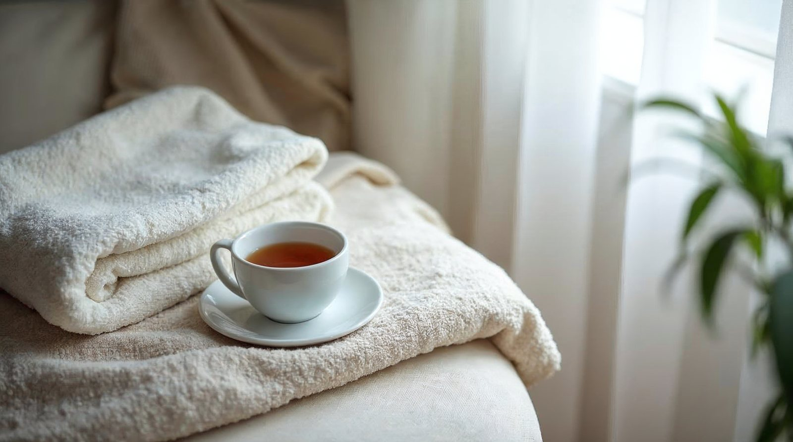
무릎 안쪽 아래가 아픈 거위발건염은 무릎 관절염과 어떻게 다르고 어떻게 살피나요?
무릎 안쪽, 관절선보다 손가락 두세 마디 아래가 계단에서 콕 집히듯 아프다면 힘줄이 모이는 거위발 자리를 살펴볼 수 있습니다. 관절염과 다른 점, 스스로 확인하는 법, 한의원에서 함께 보는 내용을 정리했습니다.
수정 2026-11-26

가슴 앞 근육이 당기고 아픈 흉근 통증은 어떻게 알아보고, 무엇을 살피나요?
운동이나 무거운 짐을 든 뒤, 또는 웅크린 자세로 오래 지낸 뒤 가슴 앞쪽 근육이 당기고 아플 때가 있습니다. 흉근 통증이 어떻게 생기는지, 심장이나 갈비뼈에서 오는 통증과 어떻게 나눠 보는지, 생활에서 살필 것을 정리했습니다.
수정 2026-11-26
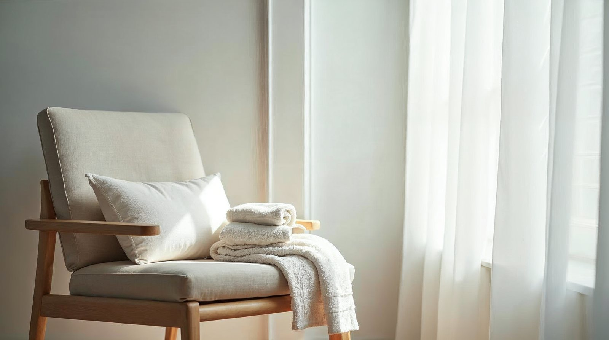
무릎 앞쪽, 무릎뼈 주변이 시큰한 슬개대퇴통증은 어떻게 살피나요?
슬개대퇴통증은 무릎뼈와 허벅지뼈가 맞닿는 자리 주변이 시큰한 상태로, 계단을 내려가거나 오래 앉았다 일어날 때 두드러집니다. 무릎뼈가 움직이는 길, 허벅지와 엉덩이 근육, 운동량의 변화를 함께 살핍니다.
수정 2026-11-26
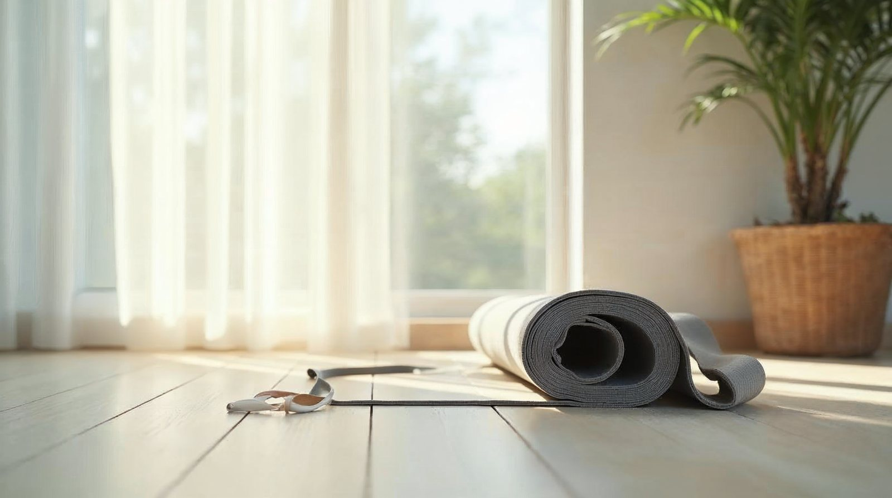
점프나 달리기를 하고 나면 무릎뼈 바로 아래가 아픈 슬개건염(점퍼스 니)은 어떻게 살피나요?
배구·농구·줄넘기·달리기 뒤 무릎뼈 아래 힘줄이 콕 집히듯 아플 때 슬개건염을 생각합니다. 왜 생기는지, 다른 무릎 통증과의 차이, 운동량 조절과 힘줄을 다시 쓰는 순서, 한의원에서 살피는 부분을 정리했습니다.
수정 2026-11-26

골다공증으로 허리뼈 압박골절이 생긴 뒤 회복기에는 무엇을 살피나요?
골다공증성 압박골절은 약해진 척추뼈가 눌려 주저앉은 상태로, 엉덩방아나 기침처럼 작은 충격에도 생길 수 있습니다. 정형외과 치료와 골다공증 치료를 기준으로, 회복기의 통증과 근육, 식사와 낙상 예방을 함께 살핍니다.
수정 2026-11-26
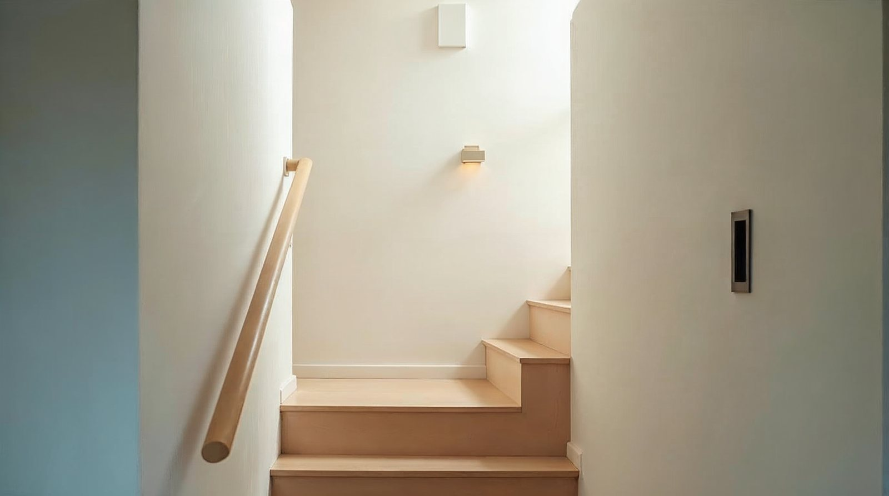
어르신이 계단에서 발목을 헛디뎠을 때, 붓지 않았다면 괜찮은 걸까요?
계단에서 발목을 헛디딘 어르신은 바로 붓지 않아도 뼈를 먼저 확인하는 것이 좋습니다. 붓기는 하루 이틀 뒤 올라오기도 하고 회복에 몇 주가 걸릴 수 있어, 다니기 편한 계획과 다시 넘어지지 않는 걸음을 함께 챙깁니다.
수정 2026-11-26
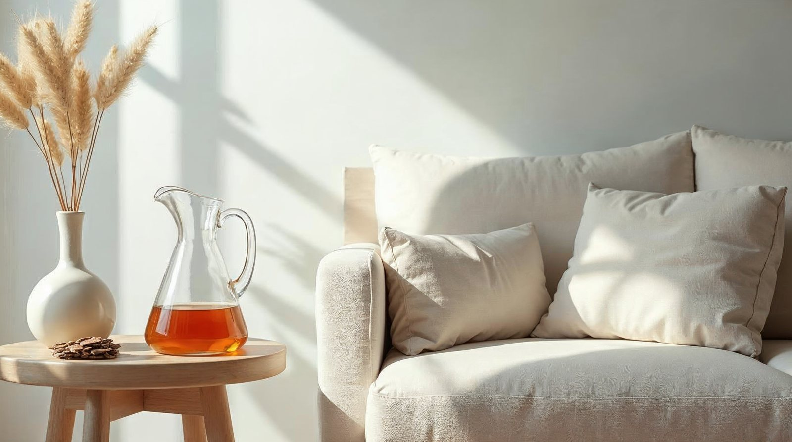
어르신 무릎이 자주 붓고 물이 찬 것처럼 묵직할 때는 무엇을 살피고 어떻게 지내나요?
무릎에 물이 찬다는 것은 관절 안쪽이 자극을 받아 관절액이 늘어난 상태를 말합니다. 어르신 무릎이 붓는 흔한 이유와 비슷해 보이는 경우, 쉬는 법과 움직이는 법, 정형외과 진료와 함께 한의원에서 무엇을 보는지 정리했습니다.
수정 2026-11-26
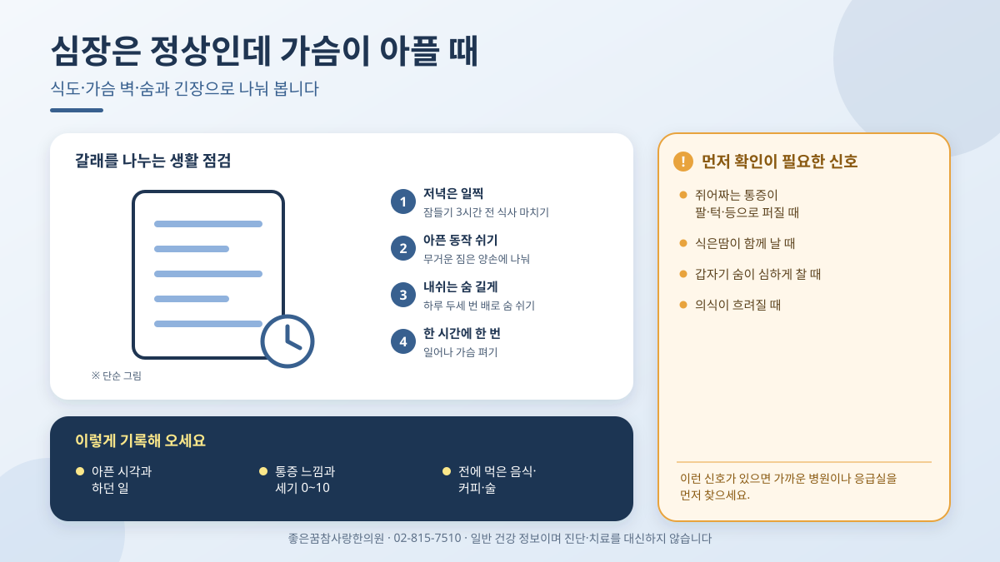
심장 검사는 정상이라는데 가슴이 자꾸 아플 때(비심장성 흉통)는 어떻게 살피나요?
심전도와 심장 초음파까지 괜찮다는데 가슴 통증이 이어질 때, 식도와 위, 갈비뼈 주변 근육, 숨과 긴장 가운데 어디서 오는지 나눠 보는 법과 한의원에서 함께 살피는 부분을 정리했습니다.
수정 2026-11-26

밤마다 종아리에 쥐가 나서 깨는 근육 경련은 왜 생기고 무엇을 살피나요?
자다가 종아리가 돌처럼 뭉쳐 비명을 지르며 깨는 밤 근육 경련은 피로, 수분, 자세, 드시는 약, 혈액순환과 함께 살펴볼 수 있습니다. 쥐가 났을 때 푸는 법, 자기 전 습관, 한의원에서 함께 보는 내용을 정리했습니다.
수정 2026-11-26
어깨와 등이 늘 뭉쳐 있고 담이 자주 걸리는 근막통증증후군은 어떻게 살피나요?
주물러도 금세 다시 뭉치고, 한 곳을 누르면 엉뚱한 곳까지 저릿한 근막통증증후군. 단순 근육통과 무엇이 다른지, 왜 같은 자리가 반복해서 굳는지, 한의원에서는 무엇을 여쭙고 어떻게 함께 살피는지 정리했습니다.
수정 2026-11-26
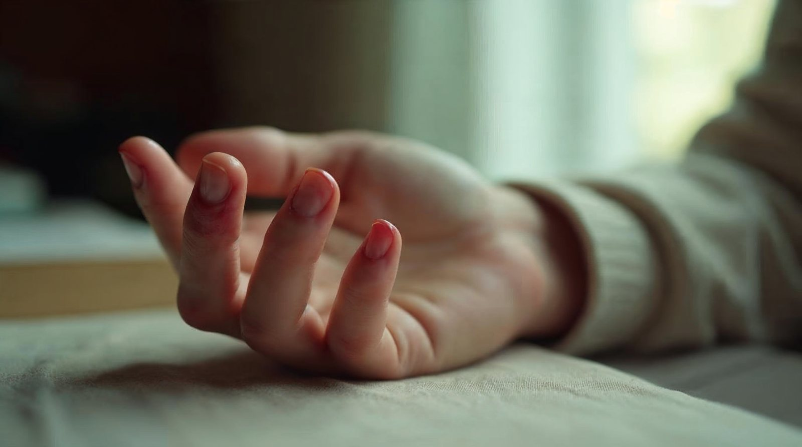
피아노·기타·현악기처럼 악기를 오래 연주하는 사람의 손과 팔 통증은 어떻게 살피나요?
연습량이 늘거나 공연을 앞두고 손가락, 손목, 팔꿈치, 어깨가 아프거나 저릴 때, 악기마다 부담이 몰리는 자리와 과사용 통증·신경 눌림·연주자 근긴장이상을 어떻게 나눠 보는지, 연습 습관과 한의원 진료를 함께 정리했습니다.
수정 2026-11-26

발가락 사이가 저리고 찌릿하며 신발 속에 돌멩이를 밟는 느낌이 드는 지간신경종은 어떻게 살피나요?
셋째와 넷째 발가락 사이가 찌릿하고 저리며, 신발 속에 작은 돌이 든 것처럼 느껴지는 지간신경종을 정리했습니다. 신발과 걷는 습관, 비슷한 발 통증과의 차이, 진찰에서 살피는 점과 일상 관리를 함께 담았습니다.
수정 2026-11-26

아침에 일어날 때 허리가 가장 뻣뻣하고 아픈 것은 왜 그렇고 어떻게 살피나요?
자고 일어나면 허리가 굳어 바로 펴지 못하다가 움직이면 조금씩 풀리는 분이 많습니다. 아침 허리 통증이 생기는 이유와 염증성 통증과 나눠 보는 법, 잠자리와 아침 습관, 진료실에서 여쭙는 것을 정리했습니다.
수정 2026-11-26
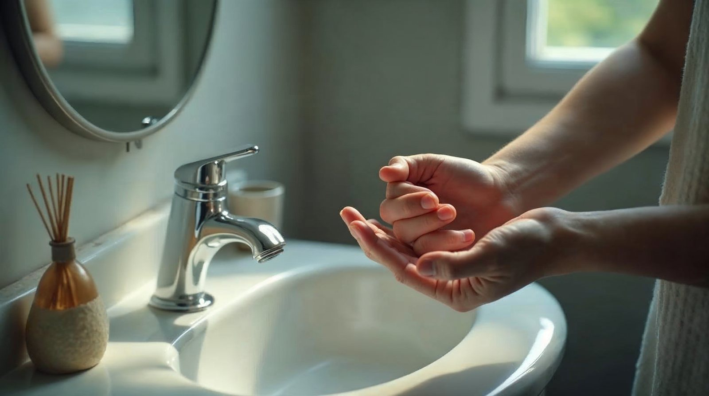
아침에 일어나면 손이 뻣뻣하고 부어서 주먹이 잘 쥐어지지 않을 때는 무엇을 살피나요?
아침마다 손가락이 굳고 부어 주먹이 잘 안 쥐어질 때, 뻣뻣함이 얼마나 오래가는지와 어느 마디가 붓는지로 류마티스·퇴행성 관절염·손목터널·부종을 어떻게 나눠 살피는지, 한의원에서 함께 볼 수 있는 부분을 정리했습니다.
수정 2026-11-26
장마철만 되면 무릎·허리가 쑤시고 몸이 천근만근 무거울 때는 어떻게 살피나요?
비가 오기 전날부터 무릎과 허리가 쑤시고 온몸이 젖은 솜처럼 무거워지는 장마철 불편은 기압과 습도, 줄어든 움직임이 함께 작용합니다. 왜 그런지와 관절을 편하게 지키는 생활법을 정리했습니다.
수정 2026-11-26

등 한가운데, 흉추 주변이 늘 뻐근하고 결릴 때는 무엇을 살피고 어떻게 풀어 가나요?
날개뼈 사이 등 한가운데가 늘 묵직하고 결리면 하루가 무겁습니다. 오래 앉은 자세, 얕은 숨, 긴장이 흉추 주변을 어떻게 굳게 하는지, 내장에서 오는 등 통증과는 어떻게 나눠 보는지, 집에서와 진료실에서 살피는 것을 정리했습니다.
수정 2026-11-26
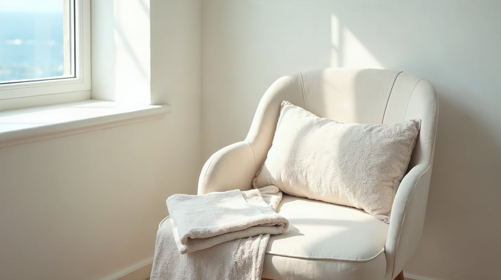
무릎 반월상연골이 찢어졌다는 말을 들은 뒤에는 무엇을 살피고 어떻게 지내나요?
반월상연골은 무릎 안에서 충격을 나눠 받는 초승달 모양의 연골로, 다치거나 닳아 찢어지면 걸림·붓기·비틀 때 통증이 생길 수 있습니다. 정형외과 진단과 치료 방향을 기준으로, 붓기와 근육, 걷는 습관을 함께 살핍니다.
수정 2026-11-26
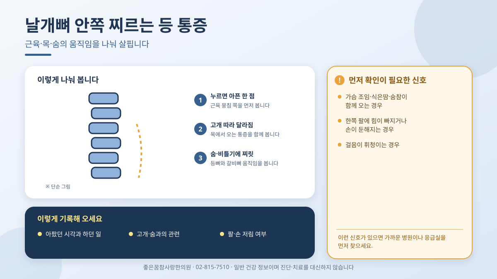
날개뼈 안쪽이 찌르듯 아픈 등 통증은 근육 결림과 목에서 오는 통증을 어떻게 나눠 살피나요?
날개뼈 안쪽 한 점이 바늘로 찌르듯 아플 때는 등 근육의 뭉침뿐 아니라 목에서 내려오는 통증, 숨과 자세의 영향까지 함께 살핍니다. 아픈 자리와 때를 나눠 보는 법과 일상 관리를 정리했습니다.
수정 2026-11-26

마라톤이나 장거리 달리기를 마친 뒤, 며칠 동안 몸 회복은 어떻게 살피나요?
결승선을 통과한 뒤 다리가 돌처럼 굳고 계단 내려가기가 힘들 때가 있습니다. 마라톤·장거리 달리기 뒤 첫날과 첫 주에 몸이 어떻게 회복하는지, 무엇을 먹고 어떻게 움직이며 다시 달리기를 언제 시작할지 정리했습니다.
수정 2026-11-26
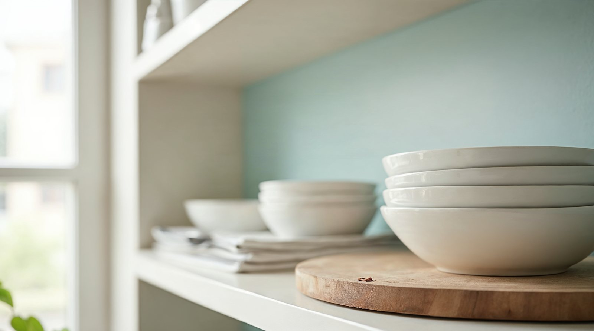
허리를 뒤로 젖히거나 돌릴 때 아픈 요추 후관절 증후군은 어떻게 살피나요?
숙일 때보다 허리를 뒤로 젖히거나 비틀 때 허리 한쪽이 콕 찌르듯 아프다면 척추 뒤쪽의 작은 관절이 지쳐 있을 수 있습니다. 후관절 통증의 특징과 디스크와의 차이, 생활에서 피할 동작과 살피는 방법을 정리했습니다.
수정 2026-11-26

허리디스크 진단을 받았는데 수술 없이 침·추나·약침으로 관리해도 될까요?
허리디스크 진단을 받은 뒤 수술 없이 지내도 되는지는 정형외과·신경외과에서 판단할 일입니다. 수술을 권하지 않는다는 이야기를 들었을 때 한의원에서 함께 살필 수 있는 것과 일상 관리를 정리했습니다.
수정 2026-11-26

오래 앉아 있으면 허리가 아플 때 한의원에서는 무엇을 먼저 묻나요?
오래 앉으면 허리가 아플 때는 앉은 지 몇 분 뒤 아픈지, 일어설 때 어떤지, 다리로 저림이 내려가는지를 먼저 여쭙고, 맥을 짚은 뒤 허리·골반 움직임을 살펴 같은 동작으로 변화를 이어서 확인합니다.
수정 2026-11-26
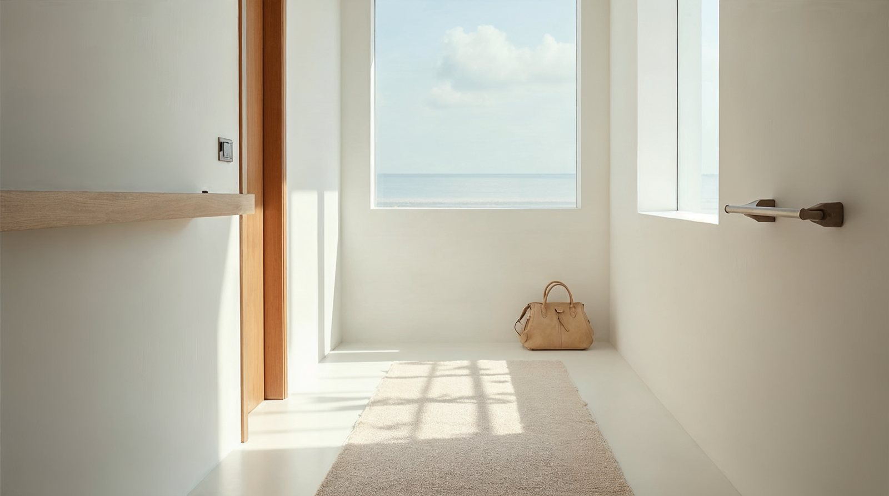
무릎 인공관절 수술을 받은 뒤 재활 기간에는 무엇을 살피고 어떻게 지내나요?
무릎 인공관절 수술 뒤에는 무릎을 펴고 굽히는 범위, 붓기, 허벅지 힘, 걸음과 잠이 함께 회복됩니다. 수술한 병원의 재활 계획을 따르면서 한의원에서 어떤 부분을 함께 살피는지 정리했습니다.
수정 2026-11-26

계단에서 시큰하고 자주 붓는 무릎 퇴행성 관절염은 어떻게 살피나요?
무릎 퇴행성 관절염은 연골이 닳고 관절 주변이 함께 변하며 계단·쪼그려 앉기에서 시큰하고 붓는 상태입니다. 아침 뻣뻣함과 붓기의 흐름, 허벅지 근력을 함께 보고 무릎을 아껴 쓰는 요령을 정리했습니다.
수정 2026-11-26
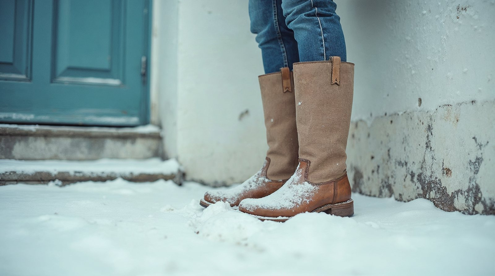
무릎 안쪽 인대를 다친 내측측부인대 손상은 회복 기간에 무엇을 살피고 어떻게 지내나요?
무릎이 바깥에서 안쪽으로 꺾이며 무릎 안쪽이 아프고 붓는다면 무릎 안쪽을 잡아 주는 내측측부인대가 다쳤을 수 있습니다. 다른 무릎 부상과의 차이, 회복 단계별로 살필 점과 생활 관리를 정리했습니다.
수정 2026-11-26

무릎에서 뚝뚝, 우두둑 소리가 날 때는 괜찮은 소리와 살펴볼 소리를 어떻게 나누나요?
앉았다 일어설 때나 계단에서 무릎이 뚝뚝 소리를 내면 걱정이 앞섭니다. 아프지 않은 소리와 통증·붓기·걸림이 함께 오는 소리를 어떻게 나눠 보는지, 집에서 해 볼 수 있는 관리와 진료실에서 살피는 것을 정리했습니다.
수정 2026-11-26
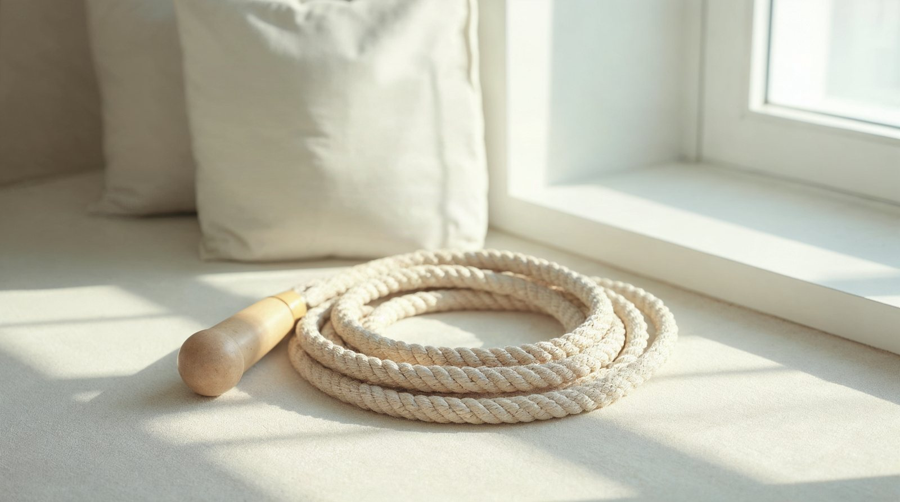
줄넘기를 시작하고 종아리와 발목이 아플 때는 어떻게 살피나요?
다이어트나 체력을 위해 줄넘기를 시작하면 며칠 만에 종아리가 단단하게 뭉치고 발목과 아킬레스건, 정강이가 시큰해지기 쉽습니다. 줄넘기가 다리에 어떤 부담을 주는지, 횟수와 바닥, 신발을 어떻게 살피는지 정리했습니다.
수정 2026-11-26

달리다 보면 무릎 바깥쪽이 찌릿한 장경인대 증후군은 왜 생기고 어떻게 살피나요?
처음엔 괜찮다가 일정 거리를 넘기면 무릎 바깥쪽이 찌릿해 멈추게 된다면 허벅지 바깥 긴 띠가 지나가는 자리를 살펴볼 수 있습니다. 생기는 이유, 비슷한 무릎 통증과의 차이, 달리기 조절법을 정리했습니다.
수정 2026-11-26
명절을 보내고 나면 온몸이 몸살처럼 쑤시고 손목·허리가 아픈 명절 증후군은 어떻게 살피나요?
며칠 동안 전 부치고 상 차리고 장거리 운전까지 하고 나면 손목과 허리가 쑤시고 몸살처럼 처지는 분이 많습니다. 명절 증후군이 왜 생기는지, 명절 중과 뒤에 몸을 어떻게 돌보면 좋은지 정리했습니다.
수정 2026-11-26
사타구니가 시큰하고 양말 신기가 힘든 퇴행성 고관절 통증은 어떻게 살피나요?
퇴행성 고관절 통증은 사타구니나 엉덩이 앞쪽이 시큰하고 양말 신기·차에서 내리기가 힘들어지는 모습으로 옵니다. 허리에서 오는 통증과 구분하고 걷기·근력·체중을 함께 살핍니다.
수정 2026-11-26

아침에 첫발을 디딜 때 발바닥이 아프면 어떤 점을 살펴보나요?
아침 첫걸음에 발뒤꿈치가 찌르듯 아프다가 걸으면 덜해진다면 발바닥과 종아리가 당겨 있는 경우를 먼저 생각합니다. 아픈 위치와 시간대, 신발, 서 있는 시간을 여쭙고 필요하다고 판단될 때 초음파와 체외충격파 등을 정합니다.
수정 2026-11-26
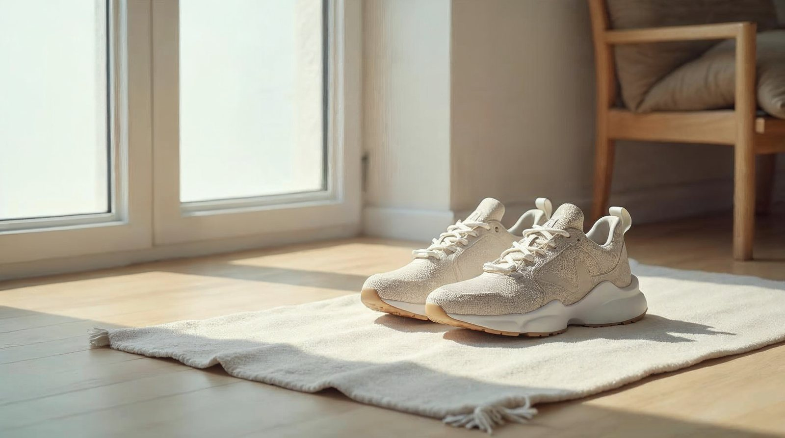
발뒤꿈치 한가운데가 멍든 것처럼 아픈 지방패드 통증은 족저근막염과 어떻게 다르고 어떻게 살피나요?
발뒤꿈치 한가운데가 돌멩이를 밟은 듯 멍든 것처럼 아프다면 뒤꿈치 아래 쿠션 역할을 하는 지방패드가 지친 경우일 수 있습니다. 족저근막염과의 차이, 신발과 바닥, 생활에서 살필 점을 정리했습니다.
수정 2026-11-26
손가락 끝마디가 굵어지고 욱신거리는 헤베르덴 결절(손가락 관절염)은 어떻게 살피나요?
손가락 끝마디가 툭 튀어나오고 아침마다 뻣뻣한 헤베르덴 결절. 손가락 퇴행성 관절염이 왜 생기는지, 류마티스 관절염과는 무엇이 다른지, 손을 아끼며 쓰는 생활 요령과 한의원에서 함께 살피는 것을 정리했습니다.
수정 2026-11-26
달리다가 허벅지 뒤가 뜨끔하며 당긴 햄스트링 손상(파열·당김)은 어떻게 살피나요?
전력으로 달리거나 공을 차다 허벅지 뒤가 뜨끔했다면 햄스트링 손상을 생각합니다. 왜 생기는지, 정도를 가늠하는 법, 처음 며칠과 그 뒤의 관리, 다시 달리기까지의 순서, 한의원에서 함께 살피는 부분을 정리했습니다.
수정 2026-11-26

엄지발가락 뿌리가 굳어 잘 젖혀지지 않고 걸을 때 아픈 무지강직은 어떻게 살피나요?
엄지발가락 뿌리 관절이 뻣뻣해 위로 잘 젖혀지지 않고, 걸을 때 발을 밀어낼 때마다 아프다면 무지강직일 수 있습니다. 무지외반, 통풍과의 차이와 신발, 걸음, 생활에서 살필 점을 정리했습니다.
수정 2026-11-26
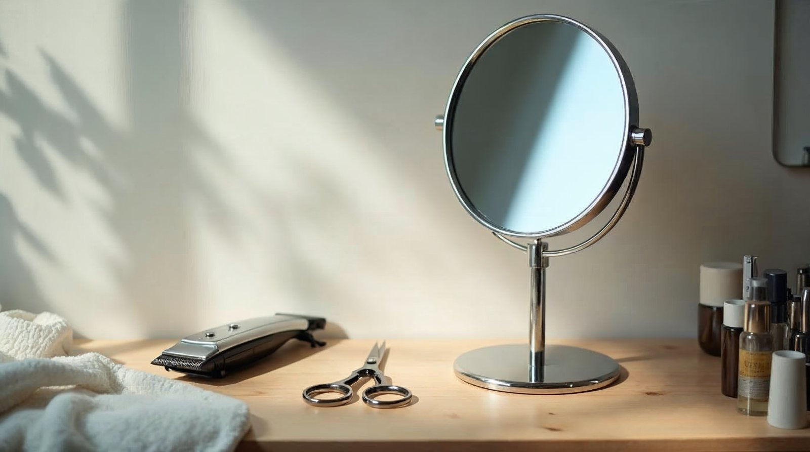
가위질과 드라이를 하루 종일 하는 미용사의 손목과 어깨 통증은 어떻게 살피나요?
가위질, 드라이, 롤 말기, 샴푸를 하루 종일 이어 가는 미용 일에서 엄지 쪽 손목, 손가락, 팔꿈치, 어깨, 허리에 부담이 몰리는 이유와 통증 종류를 나눠 보고, 일하면서 해 볼 수 있는 요령과 한의원 진료를 정리했습니다.
수정 2026-11-26
공을 차거나 옆으로 미끄러진 뒤 사타구니가 당기고 아픈 내전근·서혜부 염좌는 어떻게 살피나요?
축구, 풋살, 스케이트, 빙판길 미끄러짐 뒤 사타구니 안쪽이 당기고 다리를 모으거나 벌릴 때 아프다면 내전근 손상을 생각합니다. 다른 사타구니 통증과의 차이, 처음 며칠의 관리, 복귀 순서, 한의원에서 살피는 부분을 정리했습니다.
수정 2026-11-26
골프를 치고 난 뒤 허리와 옆구리가 결리고 아플 때는 어떻게 나눠 살피나요?
라운딩이나 연습장 뒤 허리 아래쪽과 옆구리, 갈비뼈 아래가 결릴 때 스윙의 비틀림이 어디에 몰렸는지 나눠 봅니다. 근육·갈비뼈·허리·콩팥 쪽 원인의 차이와 연습량 조절, 한의원에서 살피는 부분을 정리했습니다.
수정 2026-11-26
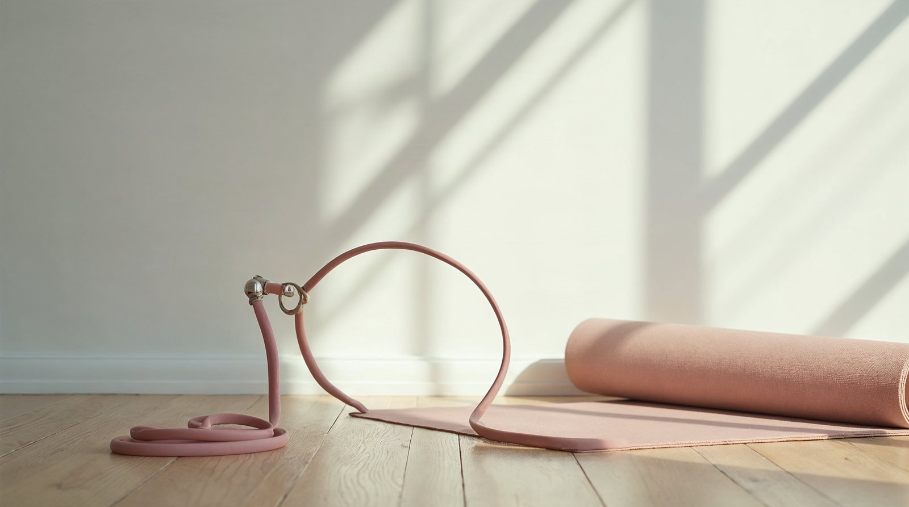
엉덩이 옆이 뻐근하고 옆으로 누우면 아픈 중둔근 통증은 어떻게 살피나요?
엉덩이 바깥쪽이 뻐근하고 아픈 쪽으로 눕기 힘들거나, 한 발로 설 때 골반이 흔들린다면 중둔근이 지쳐 있을 수 있습니다. 중둔근이 하는 일과 통증이 생기는 이유, 허리·고관절 통증과의 차이, 생활 관리를 정리했습니다.
수정 2026-11-26

어깨가 굳어 팔이 올라가지 않는 오십견(유착성 관절낭염)은 어떻게 살피나요?
오십견은 어깨 관절을 감싼 주머니가 두꺼워지고 굳어 팔이 여러 방향으로 잘 올라가지 않는 상태입니다. 아픈 시기·굳는 시기·풀리는 시기를 나눠 보고, 시기에 맞는 움직임과 잠자리 요령을 정리했습니다.
수정 2026-11-26
거북목과 목 뒤 뻐근함은 한의원에서 어떻게 살피나요?
거북목과 목 뒤 뻐근함은 목만 보지 않고 어깨·등·눈의 피로까지 함께 살핍니다. 하루 화면 시간과 불편한 방향, 두통·팔 저림 여부를 먼저 여쭙고, 맥을 짚은 뒤 같은 동작으로 변화를 이어서 확인합니다.
수정 2026-11-26

40대 이후 오랜만에 운동을 다시 시작하기 전, 몸은 무엇부터 점검하면 좋을까요?
몇 년 만에 헬스장이나 달리기, 등산을 다시 시작하려는 40대 이후라면 의욕만큼 몸의 준비도 함께 살펴야 합니다. 예전에 다친 곳, 혈압과 잠, 근력과 유연성을 어떻게 점검하고 첫 몇 주를 어떻게 보내면 좋은지 정리했습니다.
수정 2026-11-26

평발이거나 발 아치가 무너져 발바닥 안쪽이 아플 때는 무엇을 살피고 어떻게 관리하나요?
오래 서 있으면 발바닥 안쪽 오목한 자리가 묵직하고, 안쪽 복사뼈 아래까지 뻐근하다면 발 아치를 받치는 힘줄과 근육이 지쳐 있을 수 있습니다. 평발의 종류, 아치가 무너지는 이유, 생활에서 할 수 있는 관리를 정리했습니다.
수정 2026-11-26
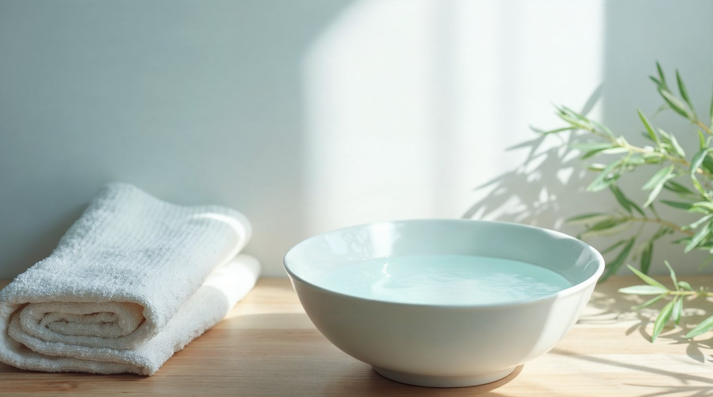
공에 맞거나 부딪혀 손가락을 삐었을 때, 손가락 염좌는 어떻게 살피나요?
농구공을 받다가, 문틈에 부딪혀서 손가락 마디가 붓고 구부리기 어려울 때가 있습니다. 손가락 염좌가 무엇인지, 골절·힘줄 손상과 어떻게 나눠 보는지, 첫 며칠과 회복기에 무엇을 살피는지 정리했습니다.
수정 2026-11-26

온몸이 쑤시고 검사는 정상이라는 섬유근육통은 어떻게 살피나요?
섬유근육통은 몸 여러 곳의 통증이 석 달 넘게 이어지고 피로·얕은 잠·집중 저하가 함께 오는 상태입니다. 류마티스내과에서 다른 원인을 확인한 뒤 잠과 활동, 몸의 긴장을 함께 살핍니다.
수정 2026-11-26
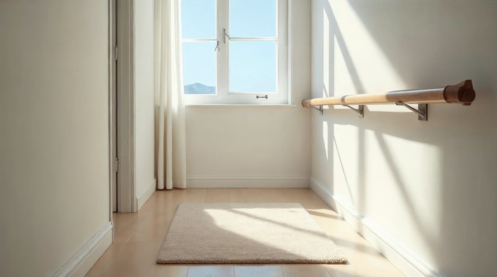
어르신이 넘어진 뒤 남은 통증과 또 넘어질까 하는 두려움은 어떻게 함께 살피나요?
넘어진 뒤에는 몸의 통증과 함께 또 넘어질까 하는 두려움이 남아 바깥 활동이 줄기 쉽습니다. 넘어진 직후 확인할 것, 남은 통증을 살피는 법, 두려움 때문에 움직임이 줄어드는 고리를 끊는 방법을 정리했습니다.
수정 2026-11-26

상자를 들고 계단을 오르내리는 택배·물류 일로 허리와 무릎이 아플 때는 어떻게 살피나요?
상하차와 분류, 계단 배송, 차에 오르내리기를 하루 수백 번 반복하는 택배·물류 일에서 허리와 무릎에 부담이 쌓이는 이유와 통증 종류를 나눠 보고, 짐을 드는 요령과 일하며 해 볼 수 있는 것, 한의원 진료를 정리했습니다.
수정 2026-11-26

운동하고 이틀째에 더 쑤시는 지연성 근육통은 왜 생기고, 회복은 어떻게 살피나요?
오랜만에 운동한 다음 날보다 그다음 날 계단 내려가기가 더 힘들 때가 있습니다. 지연성 근육통이 왜 생기는지, 근육 손상과 어떻게 구분하는지, 며칠 동안 어떻게 움직이고 쉬면 편한지 정리했습니다.
수정 2026-11-26

디스크가 닳았다는 말을 들었을 때, 퇴행성 디스크는 무엇이고 어떻게 살피나요?
검사 결과지에 퇴행성 디스크, 디스크가 닳았다는 말이 적혀 있으면 덜컥 겁이 납니다. 사진 속 변화와 지금의 통증이 어떻게 다른지, 생활에서 허리를 어떻게 쓰고 한의원에서는 무엇을 함께 살피는지 정리했습니다.
수정 2026-11-26
데드리프트나 스쿼트 같은 웨이트 운동 뒤 허리가 뻐근할 때는 어떻게 살피나요?
데드리프트와 스쿼트를 하고 나면 허리 아래가 묵직하거나 다음 날 허리를 펴기 힘들 때가 있습니다. 근육이 지친 것과 삐끗한 것, 다리로 저림이 내려가는 것을 어떻게 나눠 보고 자세와 무게를 어떻게 살피는지 정리했습니다.
수정 2026-11-26
아기를 안거나 휴대폰을 쥘 때 엄지 쪽 손목이 찌릿한 드퀘르뱅 건초염은 어떻게 살피나요?
드퀘르뱅 건초염은 엄지를 움직이는 힘줄이 손목 엄지 쪽 좁은 통로에서 붓고 쓸리며 아픈 상태입니다. 관절염·손목터널증후군과 구분하고, 손 쓰는 습관과 쉬는 방법, 진찰 뒤 함께할 수 있는 것을 정리했습니다.
수정 2026-11-26
팔꿈치를 오래 굽히고 있으면 새끼손가락과 약지가 저린 팔꿈치 척골신경 저림(주관증후군)은 어떻게 살피나요?
팔꿈치 안쪽을 지나는 척골신경이 눌리거나 당겨지면 새끼손가락과 약지 쪽이 저리고 손힘이 빠질 수 있습니다. 손목터널증후군·목디스크와 구분하는 법과 팔꿈치 자세, 진찰에서 함께 살피는 것을 정리했습니다.
수정 2026-11-26

다친 곳은 아물었는데 손발이 타는 듯 아프고 색과 온도가 변하는 복합부위통증증후군(CRPS)은 어떻게 살피나요?
골절이나 수술, 삐끗한 뒤 상처는 아물었는데 손발이 타는 듯 아프고 붓고 색과 온도가 변하는 복합부위통증증후군(CRPS)의 특징과 구분법, 통증 클리닉 치료와 함께 한의원에서 살필 수 있는 부분을 정리했습니다.
수정 2026-11-26

칼질과 팬 흔들기, 무거운 냄비 들기가 이어지는 조리사·주방 일의 손목과 허리 통증은 어떻게 살피나요?
칼질, 팬 흔들기, 무거운 냄비와 식자재 나르기, 오래 서기가 겹치는 주방 일에서 손목과 팔꿈치, 허리, 다리에 부담이 몰리는 이유와 통증 종류를 나눠 보고, 일하면서 해 볼 수 있는 요령과 한의원 진료를 정리했습니다.
수정 2026-11-26

앉을 때마다 엉덩이 맨 아래 꼬리뼈가 찌릿한 꼬리뼈 통증은 어떻게 살피나요?
딱딱한 의자에 앉거나 앉았다 일어설 때 꼬리뼈 끝이 찌릿한 꼬리뼈 통증. 엉덩방아나 오래 앉는 습관, 출산이 어떻게 영향을 주는지, 앉는 법과 방석 고르기, 한의원에서 함께 살피는 것을 정리했습니다.
수정 2026-11-26
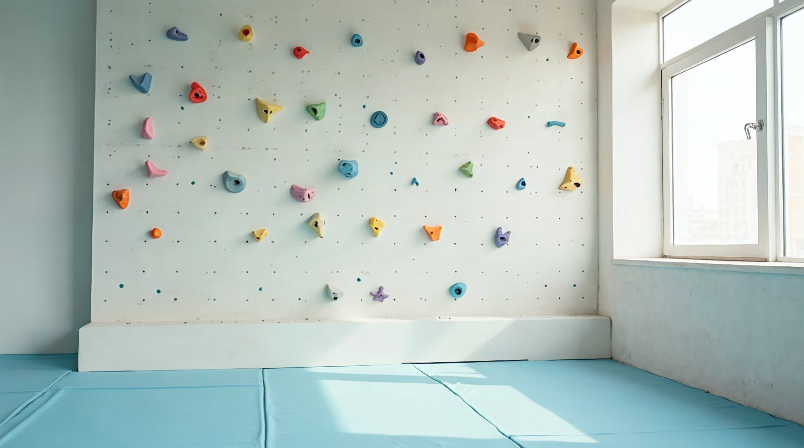
클라이밍을 하고 나면 손가락과 팔꿈치가 아플 때는 어떻게 살피나요?
실내 클라이밍을 시작하고 나면 손가락 마디 안쪽이 시큰하고 팔꿈치 안쪽이나 바깥쪽이 뻐근해지기 쉽습니다. 작은 홀드를 잡는 손가락과 팔꿈치가 왜 지치는지, 무엇을 나눠 보고 어떻게 쉬어 가는지 정리했습니다.
수정 2026-11-26

쇄골 안쪽 끝이나 흉쇄관절이 아프고 붓는 느낌이 들 때는 어떻게 살피나요?
목 아래 가슴뼈와 쇄골이 만나는 자리가 시큰하고 볼록해 보이거나, 팔을 들 때 쇄골 주변이 뻐근할 때가 있습니다. 쇄골과 흉쇄관절 통증이 왜 생기는지, 어깨나 가슴 통증과 어떻게 다른지, 생활과 진료에서 살피는 점을 정리했습니다.
수정 2026-11-26
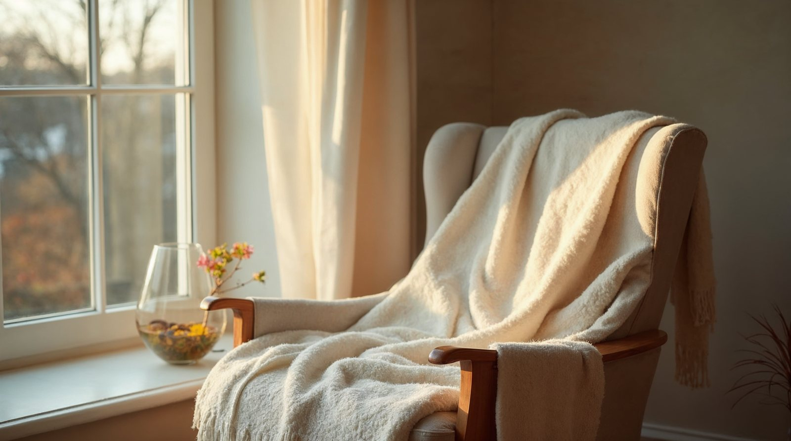
몇 달·몇 년째 좋아졌다 나빠졌다를 반복하는 만성 요통은 어떻게 살피나요?
허리 통증이 석 달 넘게 이어지거나 좋아졌다 나빠졌다를 되풀이하면 만성 요통으로 봅니다. 통증이 오래가는 이유, 급성 통증과 다르게 살피는 점, 진료실에서 여쭙는 것과 일상에서 바꿔 볼 수 있는 습관을 정리했습니다.
수정 2026-11-26

발목이 자꾸 꺾이고 불안한 만성 발목 불안정은 균형 감각부터 어떻게 다시 기르나요?
평평한 길에서도 발목이 휘청하고, 한 번 삔 뒤로 같은 쪽이 자꾸 꺾인다면 인대와 함께 발목의 위치 감각이 흐려져 있을 수 있습니다. 왜 반복되는지, 집에서 하는 균형 연습과 한의원에서 함께 보는 내용을 정리했습니다.
수정 2026-11-26
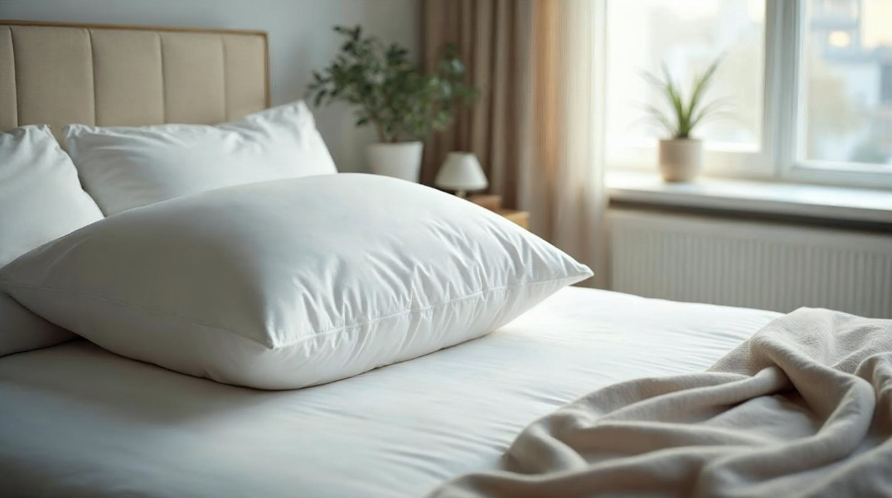
목을 돌릴 때마다 우두둑 소리가 나고 뻣뻣한 목 퇴행(경추증)은 어떻게 살피나요?
고개를 돌릴 때 사각사각, 우두둑 소리가 나고 아침마다 목이 뻣뻣하면 목뼈가 닳은 건 아닐까 걱정되십니다. 목 소리의 흔한 까닭, 경추증과 목디스크의 차이, 생활 관리와 한의원에서 함께 살피는 방법을 정리했습니다.
수정 2026-11-26
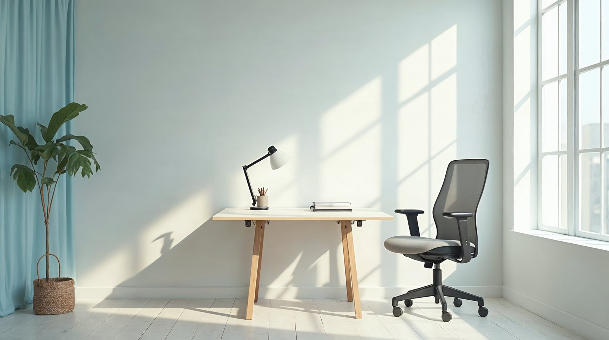
목디스크 진단을 받은 뒤 수술 없이 지낼 때 침·추나와 일상 관리는 어떻게 하나요?
목디스크 진단 뒤 수술 없이 지켜보자는 이야기를 들었을 때, 그 시간을 어떻게 보내면 좋을지 정리했습니다. 수술 여부는 정형외과·신경외과 판단이며, 한의원에서 함께 살피는 것과 화면·베개·자세 관리를 담았습니다.
수정 2026-11-26

새벽에 손이 저려 깨는 손목터널증후군은 어떻게 살피나요?
새벽에 엄지부터 넷째 손가락까지 저려 손을 털게 된다면 손목터널증후군을 생각합니다. 목에서 오는 저림과 나누어 보고, 엄지 쪽 근육이 마르거나 힘이 빠지면 먼저 확인이 필요합니다.
수정 2026-11-26
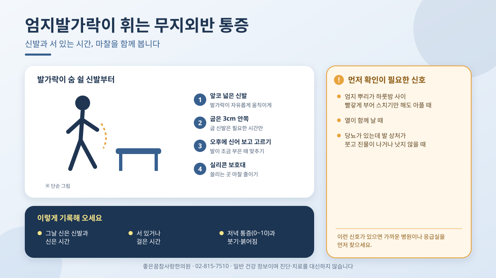
엄지발가락이 휘고 튀어나온 곳이 아픈 무지외반 통증은 어떻게 살피나요?
무지외반은 엄지발가락이 바깥쪽으로 휘며 안쪽 뼈가 튀어나와 신발에 쓸리고 아픈 상태입니다. 신발과 걸음, 발의 아치와 종아리 긴장을 함께 살피고, 휜 정도와 통증에 따라 정형외과 진료와 함께 관리합니다.
수정 2026-11-26

유방암 수술 뒤 어깨와 팔이 굳고 팔이 붓는 림프부종이 걱정될 때는 어떻게 살피나요?
유방암 수술 뒤 어깨가 굳고 팔이 붓는 일이 생길 수 있습니다. 한의원은 암을 치료하지 않으며 담당 의사와 재활의학과의 판단이 먼저입니다. 팔을 지키는 생활과 담당 의사가 동의한 범위의 한의원 진료를 정리했습니다.
수정 2026-11-26
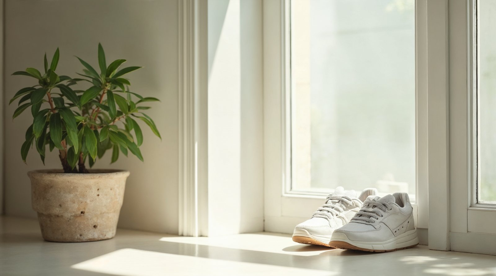
O다리나 X다리가 걱정될 때 아이와 어른은 각각 무엇을 살피고 어떻게 지내면 좋을까요?
다리를 모으고 섰을 때 무릎 사이가 벌어지는 O다리, 무릎은 붙는데 발목이 벌어지는 X다리는 아이의 성장 과정에서 자연스러운 경우도, 어른의 무릎 부담과 이어지는 경우도 있습니다. 나이별로 살필 점과 생활 습관을 정리했습니다.
수정 2026-11-26
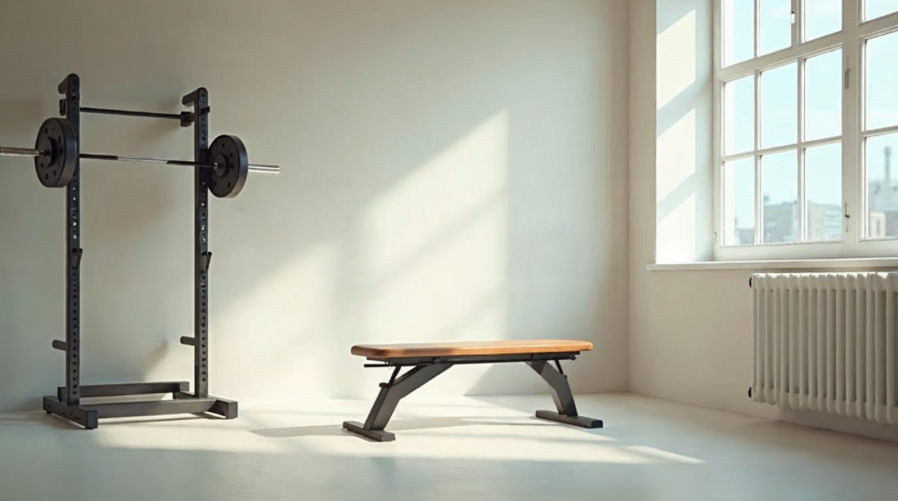
어깨 앞쪽이 욱신거리고 팔을 앞으로 들 때 아픈 이두근 힘줄염은 어떻게 살피나요?
무거운 것을 들거나 팔을 앞으로 뻗을 때 어깨 앞쪽 오목한 자리가 욱신거린다면 이두근 힘줄이 지쳐 있을 수 있습니다. 이두근 힘줄염이 왜 생기는지, 회전근개·오십견과 어떻게 다른지, 생활 관리를 정리했습니다.
수정 2026-11-26

군 입대 전에 손목·허리 통증이 있다면 언제 무엇을 점검해 두면 좋을까요?
입대 두세 달 전에는 손목·허리가 아픈 동작을 2주쯤 기록하고 필요하면 진료와 검사를 받아 두며, 한 달 전에는 같은 점검을 다시, 직전 주에는 새 운동을 줄이고 쉬어 두는 순서를 권합니다.
수정 2026-11-26
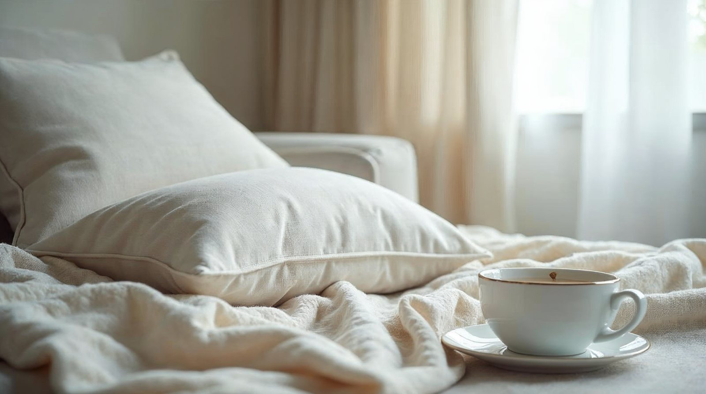
오금이 불룩하고 당기는 베이커낭종(오금 물혹)은 무엇이고 어떻게 살피나요?
무릎 뒤 오금이 말랑하게 불룩하고 쪼그려 앉을 때 꽉 끼는 느낌이 든다면 관절 속 물이 뒤쪽 주머니에 고인 베이커낭종일 수 있습니다. 생기는 이유와 다른 혹과의 차이, 생활에서 살필 점을 정리했습니다.
수정 2026-11-26
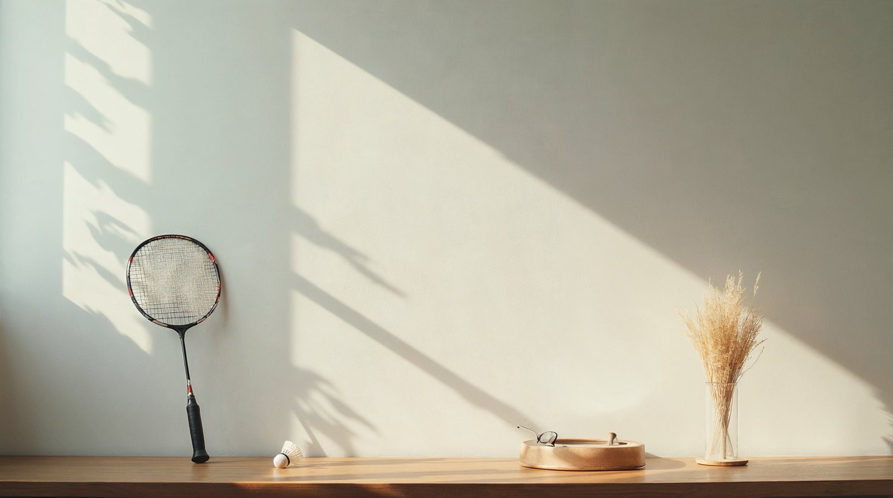
배드민턴이나 탁구를 치고 나면 어깨가 아플 때는 어떻게 살피나요?
배드민턴 스매시나 탁구 드라이브를 치고 나면 라켓을 쥔 쪽 어깨 앞과 옆이 욱신거리기 쉽습니다. 라켓 운동에서 어깨가 왜 지치는지, 팔꿈치·목 통증과 어떻게 나눠 보고 무엇을 바꿔 볼지 정리했습니다.
수정 2026-11-26
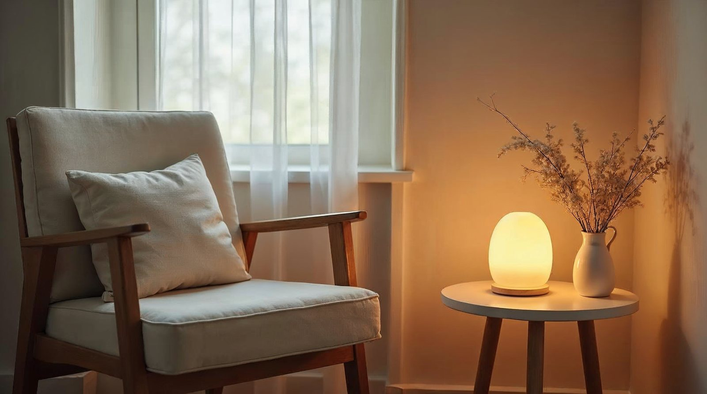
다친 적도 없는데 허리가 아플 때, 통증이라는 경고등은 어떻게 읽어야 하나요?
넘어지거나 무거운 것을 든 적도 없는데 허리가 아프다면 통증을 지우는 데서 멈추지 말고, 체중과 붓기, 앉는 시간, 잠과 스트레스처럼 그 경고등을 켠 생활을 함께 살펴보는 것이 좋습니다.
수정 2026-11-26

쪼그려 앉거나 오르막을 걸을 때 발목 앞이 끼이듯 아픈 발목 충돌증후군은 어떻게 살피나요?
발목을 위로 꺾을 때 발목 앞쪽이 무언가 끼이는 듯 아프고 쪼그려 앉기가 어려워졌다면 발목 충돌증후군을 생각합니다. 예전 발목 염좌와의 관계, 다른 발목 통증과의 차이, 생활 관리와 한의원에서 살피는 부분을 정리했습니다.
수정 2026-11-26

아침마다 허리가 굳고 움직이면 풀리는 강직성 척추염은 어떻게 살피나요?
강직성 척추염은 척추와 엉치 관절에 염증이 생겨 아침에 허리가 오래 굳고 움직이면 풀리는 모양을 보이는 병입니다. 류마티스내과 진단과 치료를 기준으로, 굳는 시간과 자세, 운동, 잠과 피로를 함께 살핍니다.
수정 2026-11-26
발목 골절로 깁스를 풀고 난 뒤 붓고 뻣뻣한 발목은 재활 기간에 어떻게 살피나요?
발목 골절 뒤 깁스나 보조기를 풀면 붓기, 뻣뻣함, 종아리 힘 빠짐, 균형 감각 저하가 함께 남기 쉽습니다. 정형외과의 경과 확인을 따르면서 일상과 한의원에서 무엇을 함께 살피는지 정리했습니다.
수정 2026-11-26
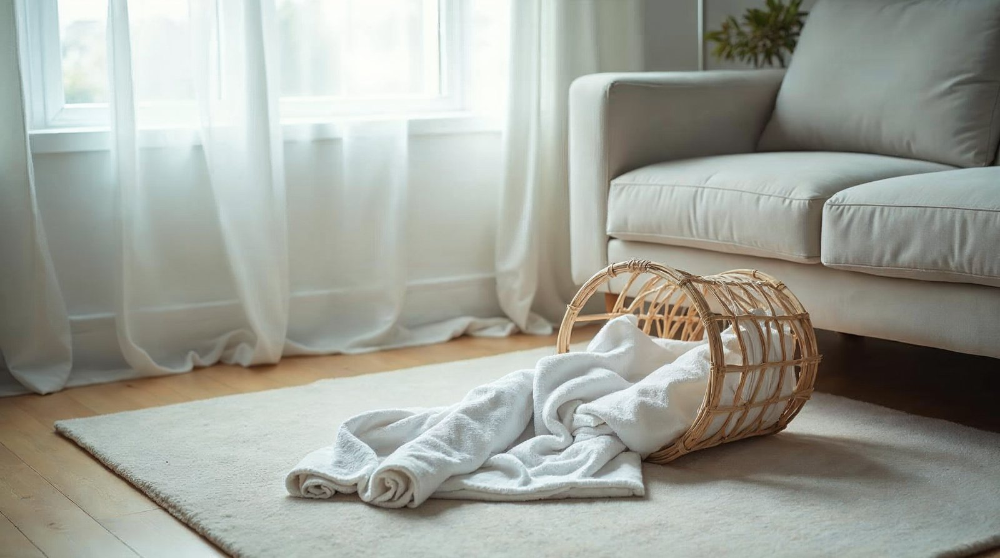
허리를 삐끗해 움직이기 힘든 급성 요추 염좌는 첫 며칠 어떻게 살피나요?
허리를 삐끗한 급성 요추 염좌는 허리 근육과 인대가 갑자기 놀란 상태로, 첫 며칠은 아프지 않은 범위에서 조금씩 움직이는 편을 권합니다. 첫 이틀 지내는 법과 다시 삐끗하지 않는 요령을 정리했습니다.
수정 2026-11-26

전방십자인대를 다친 뒤 재활 기간에는 무엇을 살피고 어떻게 지내나요?
운동 중 무릎이 꺾이며 뚝 소리가 난 뒤 전방십자인대 손상을 들으셨다면, 재활은 몇 달에 걸친 긴 길입니다. 수술 여부와 상관없이 병원 재활 일정을 지키면서 생활에서 챙길 것과 한의원에서 함께 살필 수 있는 부분을 정리했습니다.
수정 2026-11-26

연말 연탄 나눔 봉사로 언덕 골목에서 연탄을 나르고 온 다음 날 허리와 손목, 어깨가 뻐근할 때는 어떻게 살피나요?
연탄 나눔 봉사는 한 장에 3kg이 넘는 연탄을 수백 번 받아 건네고 비탈을 오르내리는 일이라, 하루 이틀 뒤 허리 옆·팔뚝·어깨·허벅지가 뻐근해지기 쉽습니다. 넓게 퍼진 근육통인지, 한 자리가 찌릿하거나 다리가 저리는지부터 나눠 살핍니다.
수정 2026-11-25

정형외과·물리치료를 다녀도 손목 통증이 오래갈 때, 상담에서 무엇을 같이 짚어 보나요?
치료를 꾸준히 받아도 손목 통증이 오래간다면 손목만이 아니라 목과 팔꿈치의 영향, 하루 손 쓰는 습관, 잠자는 자세와 잠의 양, 피로와 호르몬 변화까지 함께 짚어 봅니다. 그동안 받은 진단·검사 결과와 치료 기록을 가져오시면 이어서 정리하기 쉽습니다.
수정 2026-11-25

어깨에 담이 걸려 쇄골·목 주변까지 당길 때 첫 며칠은 어떻게 하나요?
흔히 '담이 걸렸다'고 하는 갑작스러운 결림은 근육이 놀라 굳은 경우가 많아, 첫날은 세게 주무르거나 꺾지 말고 찜질과 자세 조정으로 쉬게 한 뒤 2~3일째부터 데워 가며 조금씩 움직입니다. 가슴이 조이거나 숨이 차면 담으로 여기지 말고 먼저 확인합니다.
수정 2026-11-25

설 음식을 준비하며 오래 서 있으면 허리가 끊어질 듯 아픈 것은 어떻게 살피나요?
명절 음식을 준비하며 몇 시간씩 서서 일하면 허리와 종아리에 피로가 쌓이기 쉬워, 통증이 시작되는 시간과 쉬면 풀리는지를 먼저 묻고 서는 자세와 쉬는 간격부터 함께 정리합니다.
수정 2026-11-26

약침을 맞은 날 운동이나 목욕을 해도 되나요?
약침을 맞은 날은 놓은 자리가 쉬도록 격한 운동과 뜨거운 목욕, 사우나는 피하고 가벼운 샤워와 산책 정도로 지내는 편이 무난하며, 붓기나 열감이 이어지면 연락해 주시면 됩니다.
수정 2026-11-25

맥스톰 자기장 치료기를 쓰기 전에 무엇을 알려 주면 좋을까요?
맥스톰 자기장 치료기는 자기장을 이용하는 물리요법 장비로, 진찰 후 필요하다고 판단될 때 쓰며 심장 박동기 같은 몸속 의료기기, 금속 삽입물, 임신 여부는 사용 전에 꼭 먼저 알려 주셔야 합니다.
수정 2026-11-26
허리 수술을 받고 시간이 지나 다리 저림이 다시 생겼을 때, 진료 전에 무엇을 알아 두면 좋을까요?
허리 수술 뒤 한동안 괜찮다가 다리 저림이 다시 생겼다면 먼저 수술한 병원(주치의)에 알려 진료 시점을 상의하고, 수술 기록지와 영상 판독지를 챙겨 둡니다. 저림 자리와 걸을 때·앉을 때 차이를 적어 두고, 다리 힘이 빠지거나 대소변이 불편하면 기다리지 말고 바로 진료를 받습니다.
수정 2026-11-25

김장 때 바닥에 쪼그려 앉아 일한 뒤 허리와 무릎이 아프면 어떻게 살피나요?
바닥에 쪼그려 앉아 몇 시간 김장을 하면 허리와 무릎에 부담이 몰릴 수 있어, 일어설 때의 통증과 다리 저림을 먼저 묻고 앉는 높이와 쉬는 간격부터 함께 점검합니다.
수정 2026-11-26

김장을 하고 난 다음 날 손목과 엄지 쪽이 시큰할 때는 어떻게 살피나요?
김장 다음 날 손목과 엄지 쪽이 시큰한 것은 배추를 쥐고 비트는 동작을 오래 반복한 뒤 흔히 겪는 일이라, 아픈 동작과 붓기를 먼저 묻고 며칠 손을 덜 쓰는 요령부터 함께 정리합니다.
수정 2026-11-26

IS400 극초단파 치료기로 온열 치료를 받을 때 무엇을 알아 두면 좋을까요?
IS400 극초단파 치료기는 치료 부위를 따뜻하게 하는 온열 장비로, 진찰 후 필요하다고 판단될 때 쓰며 피부 감각과 건강 상태를 먼저 여쭙고 온도와 시간을 맞추고, 몸속 금속이나 의료기기가 있으면 꼭 먼저 알려 주셔야 합니다.
수정 2026-11-25

오십견이 의심될 때 어깨가 어느 방향으로 안 올라가는지 먼저 살펴보려면 어떻게 하나요?
오십견이 의심되면 앞으로 들기·옆으로 들기·뒤로 돌리기(뒷짐)·바깥으로 돌리기 네 방향을 거울 앞에서 양쪽 비교해 어디서 막히는지부터 살펴봅니다. 받쳐 주면 올라가는지, 고개를 움직일 때 팔이 저린지가 구분의 단서가 되며 확인은 진료에서 합니다.
수정 2026-11-25

한파에 어깨를 움츠리고 출근한 날 목과 어깨가 굳으면 어떻게 살피나요?
추운 날 어깨를 잔뜩 올리고 걷는 자세가 이어지면 목과 어깨 근육이 굳기 쉬워, 통증이 심한 시간대와 목을 돌릴 때의 느낌을 먼저 묻고 옷차림과 출근길 자세부터 함께 점검합니다.
수정 2026-11-26

택시 운전을 오래 하다 차에서 내릴 때 허리를 바로 펴기 힘들 때는 어떻게 살피나요?
택시 운전을 오래 해 차에서 내릴 때 허리를 펴기 힘들다면 1~2시간마다 내려 허리를 천천히 젖히고 걷기, 엉덩이를 좌석 깊숙이 넣어 앉기, 두 다리를 먼저 내린 뒤 일어나기부터 해 보시기를 권합니다.
수정 2026-11-26

독서실 의자에 오래 앉아 꼬리뼈와 엉덩이가 아플 때는 어떻게 하나요?
독서실 의자에 오래 앉아 꼬리뼈와 엉덩이가 아플 때는 가운데가 파인 방석, 깊숙이 앉기, 50분마다 일어나 걷기부터 해 보고, 다리 저림이 함께 있으면 허리와 골반, 앉는 자세를 함께 살핍니다.
수정 2026-11-26
눈 온 다음 날 집 앞 눈을 치운 뒤 허리와 어깨가 결릴 때는 어떻게 하나요?
눈을 치울 때는 허리를 숙인 채 무거운 눈을 들어 비트는 동작이 반복되어 허리와 어깨에 부담이 쌓일 수 있습니다. 얼마나 오래 어떤 자세로 치웠는지 먼저 여쭙고 무리 없이 치우는 방법을 함께 찾습니다.
수정 2026-11-25

장바구니를 들고 언덕길을 오르고 나면 손목과 팔꿈치가 시큰할 때는 어떻게 살피나요?
무거운 장바구니를 한 손으로 들고 언덕을 오르면 손목과 팔꿈치 바깥쪽에 부담이 몰릴 수 있어, 드는 방법과 무게, 아픈 동작을 먼저 묻고 짐을 나누는 생활 요령부터 함께 정리합니다.
수정 2026-11-26
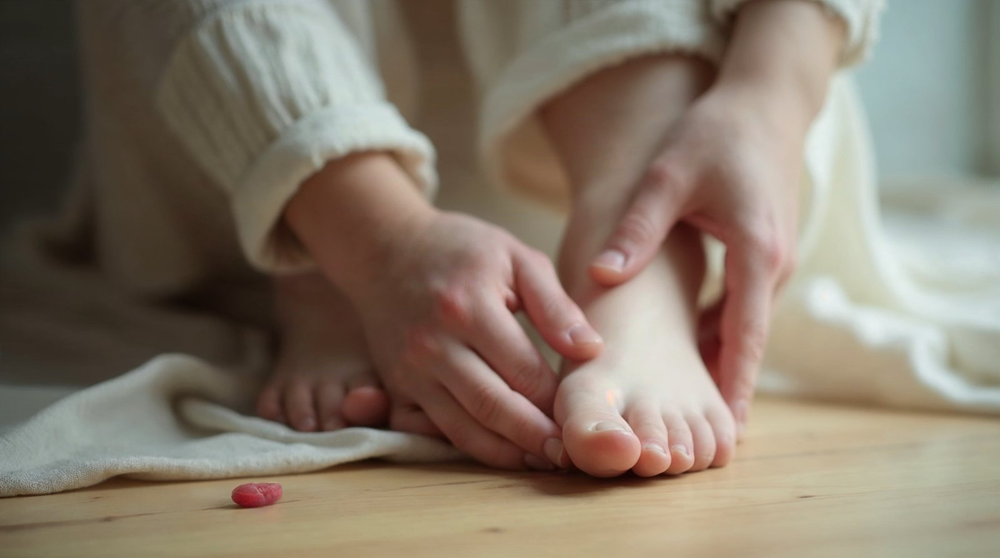
동네 공원 걷기를 새로 시작했는데 발바닥이 아플 때는 어떻게 살피나요?
걷기 운동을 갑자기 늘리면 발바닥과 뒤꿈치에 부담이 쌓일 수 있어, 걷는 시간과 길의 경사, 신발, 아침 첫발 통증 여부를 먼저 묻고 걷는 양을 조절하는 방법을 함께 정리합니다.
수정 2026-11-26

아침마다 내리막길로 출근하는데 정강이 앞쪽과 발목이 뻐근할 때는 어떻게 살피나요?
매일 내리막길을 빠르게 걸으면 정강이 앞쪽 근육과 발목이 브레이크 역할을 하느라 뻐근해질 수 있어, 걷는 속도와 신발, 아픈 시간대를 먼저 묻고 내려가는 걸음부터 함께 바꿉니다.
수정 2026-11-26

공원 야외 운동기구로 허리를 돌리다가 아파졌을 때는 어떻게 하나요?
공원 야외 운동기구로 허리를 세게 돌리거나 반동을 주면 허리 근육과 관절에 부담이 갈 수 있습니다. 어떤 기구를 얼마나 했는지와 아픈 동작을 먼저 여쭙고 무리 없이 움직이는 방법을 함께 찾습니다.
수정 2026-11-25
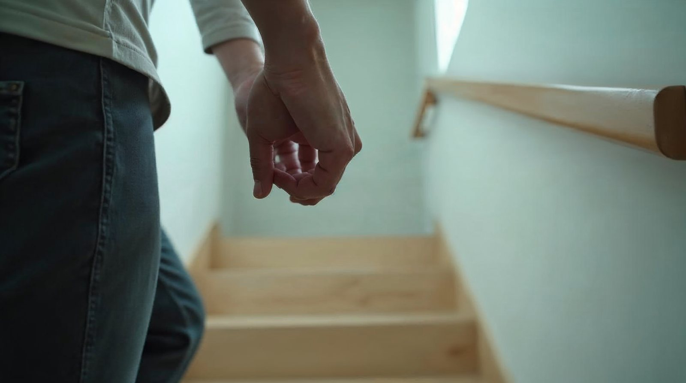
노량진역에서 환승하며 계단을 오르내리는 출퇴근길에 무릎이 시큰할 때는?
환승 계단을 오르내리며 무릎이 시큰할 때는 내려갈 때 난간을 잡고 한 칸씩 천천히, 에스컬레이터를 섞어 쓰는 것부터 시작하고, 붓거나 걸리는 느낌이 있으면 걷는 습관과 무릎 주변을 함께 살핍니다.
수정 2026-11-25
하루 종일 서서 강의하면 허리와 종아리가 뻐근할 때는 어떻게 하나요?
하루 종일 서서 강의해 허리와 종아리가 뻐근할 때는 쿠션 있는 신발, 체중 번갈아 싣기, 쉬는 시간 발목 움직이기부터 해 보고, 다리가 자주 붓거나 쥐가 나면 자세와 골반, 생활 습관을 함께 살핍니다.
수정 2026-11-26

판서를 많이 하는 학원 강사의 어깨가 아플 때는 어떻게 살피나요?
판서로 팔을 오래 들어 어깨가 아플 때는 판서 높이를 눈높이 근처로 낮추고 수업 사이에 팔을 내려 쉬는 것부터 시작하며, 팔을 들 때 걸리거나 밤에 아프면 아픈 동작과 어깨 주변을 함께 살핍니다.
수정 2026-11-26

한강공원에서 달리기를 하고 나면 무릎 바깥쪽이 아플 때는 어떻게 살피나요?
달리기 뒤 무릎 바깥쪽 통증은 거리를 갑자기 늘렸거나 신발, 달리는 길, 엉덩이와 허벅지의 긴장과 관련된 경우가 많습니다. 언제부터 어떤 구간에서 아픈지 먼저 여쭙고 달리는 습관을 함께 점검합니다.
수정 2026-11-25
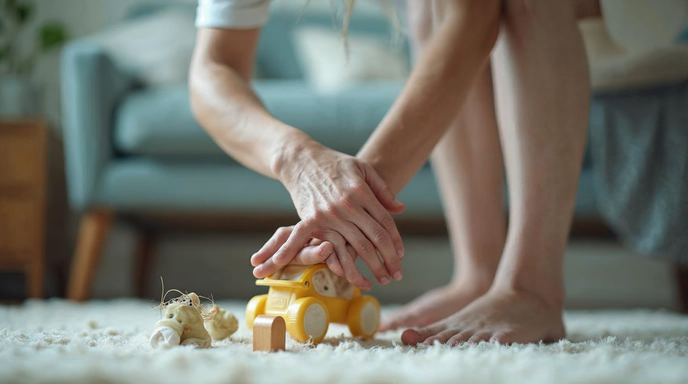
손주를 돌보는 어르신이 아이를 안아 올리다 허리와 무릎이 아플 때는 어떻게 살피나요?
손주를 안아 올리다 허리와 무릎이 아프다면 허리 대신 무릎을 굽혀 아이를 몸 가까이 붙여 들고, 바닥 대신 낮은 의자에 앉아 놀아 주며 아기띠나 유모차로 안고 걷는 시간을 줄이는 것부터 해 보시기를 권합니다.
수정 2026-11-26
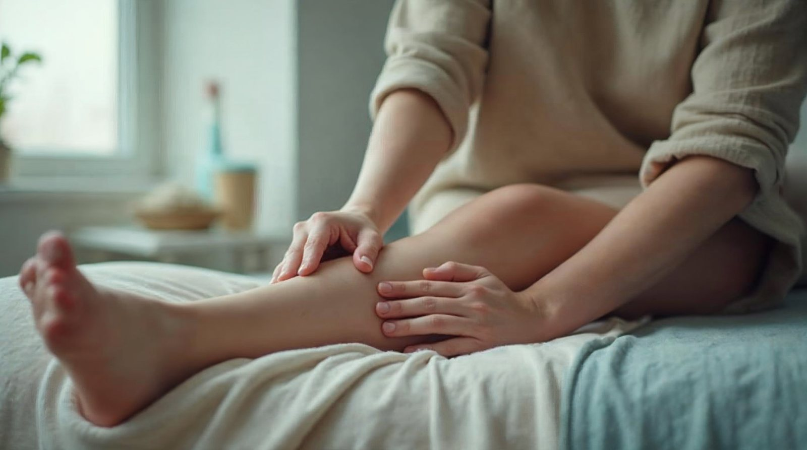
체력시험 준비로 갑자기 운동량을 늘린 뒤 무릎과 종아리가 아플 때는?
체력시험 준비로 운동량을 갑자기 늘려 무릎과 종아리가 아프다면 거리와 횟수를 조금씩 늘리고 운동 전후 몸풀기, 쿠션 있는 운동화부터 챙기며, 아픈 자리와 다리 정렬, 잠과 끼니까지 함께 살핍니다.
수정 2026-11-25
필기를 많이 하는 수험생의 손목과 엄지가 시큰할 때는 어떻게 하나요?
필기를 많이 해 손목과 엄지가 시큰할 때는 굵은 펜이나 그립으로 바꾸고 30분마다 손을 쉬게 하는 것부터 시작하며, 엄지를 움직일 때 걸리거나 손가락이 저리면 아픈 위치와 손 쓰는 습관을 함께 살핍니다.
수정 2026-11-26

배달 오토바이를 오래 타서 허리가 뻐근하고 손목·손이 저릴 때는 어떻게 살피나요?
배달 오토바이를 오래 타 허리가 뻐근하고 손이 저리다면 배달 사이 내려서 허리 젖히기와 손목 털기, 손목이 꺾이지 않게 핸들 쥐기, 겨울철 보온부터 챙기고, 저림이 반복되면 손목과 목·어깨를 함께 살핍니다.
수정 2026-11-26
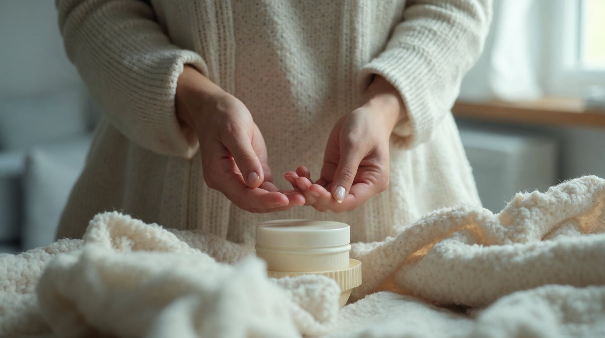
추운 아침 재채기 한 번에 허리가 찌릿했을 때는 어떻게 살피나요?
추운 아침에는 몸이 굳어 있어 재채기나 기침처럼 갑작스러운 움직임에도 허리가 찌릿할 수 있습니다. 그 뒤 어떤 동작이 불편한지와 다리 저림 여부를 먼저 여쭙고 아침 습관을 함께 점검합니다.
수정 2026-11-25
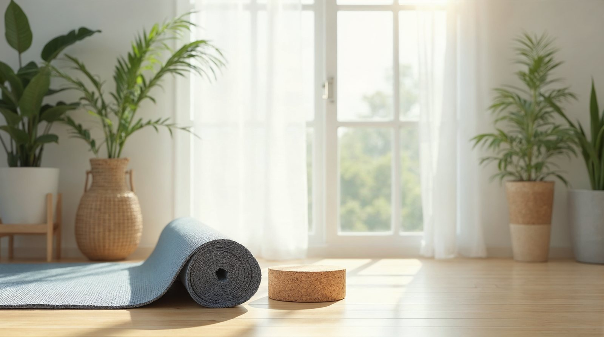
요가를 하다가 허벅지 뒤와 엉덩이가 당기는 것은 어떻게 살피나요?
요가에서 허벅지 뒤와 엉덩이가 당기는 느낌은 유연성 차이와 동작 깊이에 따라 달라집니다. 어떤 동작에서 당기는지, 시원한 당김인지 찌릿한 통증인지 여쭙고 무리 없이 하는 방법을 함께 점검합니다.
수정 2026-11-26
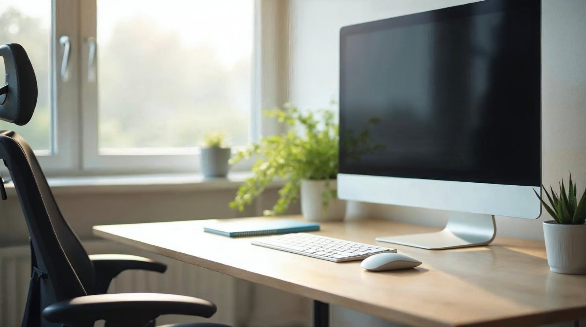
20대인데도 책상 앞에서 목과 어깨가 벌써 뻐근할 때는 어떻게 살피나요?
젊은 나이에도 하루 대부분을 책상 앞에서 보내면 목과 어깨가 일찍 굳을 수 있어, 앉는 시간과 화면 높이, 쉬는 간격을 먼저 묻고 자세와 생활 리듬부터 함께 점검합니다.
수정 2026-11-26
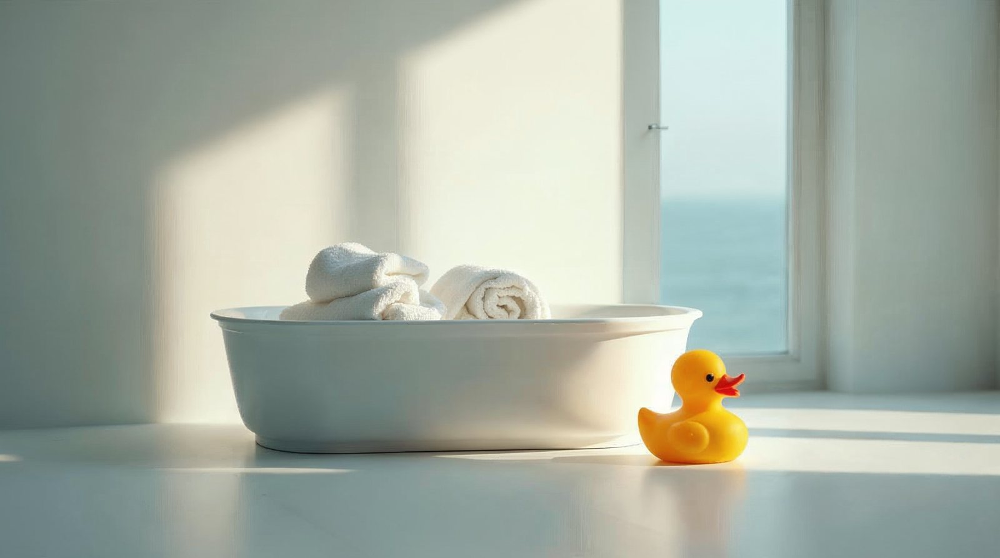
아이를 씻기고 안아 올릴 때 허리를 숙이는 동작이 반복되면 어떻게 하나요?
욕조 앞에서 허리를 숙여 아이를 씻기고 안아 올리는 동작이 반복되면 허리에 부담이 쌓일 수 있어, 아픈 순간과 욕조·침대 높이, 들어 올리는 순서를 먼저 확인하고 무릎을 쓰는 자세로 바꾸는 방법을 함께 점검합니다.
수정 2026-11-26

아기를 안고 달래느라 손목과 어깨가 아픈 부모는 자세를 어떻게 점검하나요?
아기를 하루 종일 안고 달래면 손목과 엄지, 어깨에 부담이 쌓일 수 있어, 안는 방향과 시간, 수유 자세를 먼저 묻고 팔 전체로 무게를 나누는 방법과 보호자끼리 시간을 나누는 방법을 함께 점검합니다.
수정 2026-11-26
서서 수업하는 교사는 목과 어깨, 목소리가 함께 지칠 때 어떻게 살피나요?
오래 서서 판서하고 말하는 교사는 목과 어깨가 굳고 목소리까지 쉽게 지칠 수 있습니다. 수업 중 자세와 말하는 시간, 쉬는 방법을 먼저 묻고 목과 목소리를 함께 아끼는 습관을 점검합니다.
수정 2026-11-26
60대에 걷기 운동을 새로 시작할 때 무릎과 허리는 어떻게 점검하나요?
60대에 걷기를 새로 시작하면 무릎과 허리에 낯선 부담이 생길 수 있어, 걷는 시간과 길, 신발과 이전 병력을 먼저 묻고 하루 10~15분부터 일주일 단위로 조금씩 늘리는 방법을 안내합니다.
수정 2026-11-26
60대에 계단에서 난간을 꼭 잡게 되었다면 몸에서 무엇을 살펴봐야 하나요?
계단에서 난간을 꼭 잡게 되었다면 다리 힘과 균형, 시력과 신발, 복용 약 같은 여러 요인이 겹쳤다는 신호일 수 있어, 언제부터 어떤 상황에서 불안한지를 먼저 묻고 안전한 생활 환경과 함께 점검합니다.
수정 2026-11-26
70대 어르신 집의 욕실과 현관은 낙상을 줄이려면 어떻게 점검하나요?
낙상은 몸의 힘뿐 아니라 미끄러운 욕실 바닥, 현관 문턱, 어두운 밤길 같은 집 환경이 함께 영향을 주는 경우가 많아, 넘어질 뻔한 장소와 상황을 먼저 묻고 가족이 욕실과 현관을 함께 점검하도록 안내합니다.
수정 2026-11-26
같은 허리 통증인데 왜 사람마다 쓰는 장비가 다른가요?
같은 허리 통증이라도 아파진 시기와 불편한 동작, 피부 감각, 몸속 금속·의료기기, 그날의 몸 상태가 달라 진찰 뒤 침·추나·온열(IS400)·자기장(맥스톰)·체외충격파 가운데 지금 필요한 것만 골라 씁니다.
수정 2026-11-25
약침은 무엇이고 시술 전에 무엇을 알려야 하나요?
약침은 한약재에서 추출·정제한 약액을 침으로 경혈이나 통증 부위 주변에 소량 주입하는 방법으로, 쓸지 말지는 진맥과 진찰 후 정하며 알레르기, 출혈 경향, 임신 가능성, 복용 중인 약을 미리 알려야 합니다.
수정 2026-11-26
목에서 팔로 저림이 내려올 때(목디스크 의심)는 어떤 점을 먼저 확인하나요?
목에서 팔·손가락으로 저림이 내려오면 어느 손가락이 저린지, 고개를 젖힐 때 심해지는지, 팔 힘이 빠지는지를 먼저 봅니다. 손놀림이 둔해지고 걸음이 불안하거나 대소변 이상이 있으면 영상 검사·응급실이 먼저입니다.
수정 2026-11-26
근육이 아픈 것인지 관절이 아픈 것인지 어떻게 짚어서 말하나요?
아픈 곳이 살이 많은 부분인지 뼈가 만나는 마디인지, 누르면 아픈지 움직일 때 아픈지를 손으로 짚어 보여 주시면 어떤 확인이 먼저 필요한지 정하기 쉬워집니다.
수정 2026-11-26

극초단파 치료기는 어떤 장비인가요?
극초단파 치료기는 극초단파를 이용하는 온열 장비로, 좋은꿈참사랑한의원에서는 IS400을 진찰 후 필요하다고 판단될 때만 쓰며 몸속 금속·전자 의료기기와 피부 감각을 먼저 확인하고 따뜻한 정도와 시간을 맞춥니다.
수정 2026-11-25

자기장 치료기는 어떤 장비인가요?
자기장 치료기는 자기장을 이용하는 물리요법 장비로, 좋은꿈참사랑한의원에서는 맥스톰 자기장 치료기를 진찰 후 필요하다고 판단될 때 침·추나 등과 이어서 쓰며, 체내 금속이나 전자 의료기기 여부를 먼저 확인합니다.
수정 2026-11-25
온열 치료를 받을 때 피부 감각을 먼저 묻는 이유는요?
온열 치료는 피부 감각이 둔하거나 혈액순환에 문제가 있으면 뜨거움을 늦게 느낄 수 있어, 치료 전 감각과 건강 상태를 확인하고 온도와 시간을 매번 맞춥니다.
수정 2026-11-25
미용 일을 오래 하면 어깨와 목이 뻐근한 것은 어떻게 살피나요?
미용 일은 팔을 어깨 높이로 든 채 고개를 숙이는 시간이 길어 어깨와 목에 부담이 쌓이기 쉽습니다. 언제 가장 뻐근한지와 일하는 자세를 먼저 묻고, 쉬는 간격과 작업 높이를 함께 점검합니다.
수정 2026-11-26
헬스장에서 어깨 운동을 한 뒤 어깨 앞쪽이 아플 때는 무엇을 먼저 확인하나요?
웨이트 운동 뒤 어깨 앞쪽 통증은 운동 종류와 무게, 자세, 쉬는 날에 따라 양상이 달라집니다. 어떤 동작에서 아픈지와 최근 운동 기록을 여쭙고, 무게 조절과 쉬는 방법을 함께 점검합니다.
수정 2026-11-26

골프 스윙을 한 뒤 허리가 비틀리듯 아픈 것은 어떻게 살피나요?
골프 스윙은 허리를 한쪽으로 크게 비트는 동작이라 연습량이 늘면 허리 한쪽에 부담이 쌓이기 쉽습니다. 스윙의 어느 구간에서 아픈지와 연습량, 준비운동을 여쭙고 몸 쓰는 방법을 함께 점검합니다.
수정 2026-11-26
40대에 어깨가 가끔 뻐근할 때 굳어 가기 전에 생활에서 챙길 것은 무엇인가요?
40대에 어깨가 가끔 뻐근하고 팔을 뒤로 돌릴 때 걸리는 느낌이 있다면 쓰는 범위가 줄고 있다는 신호일 수 있어, 팔을 올리는 범위와 자는 자세를 먼저 묻고 굳기 전에 생활 습관부터 점검합니다.
수정 2026-11-26

50대에 계단을 오르내릴 때 무릎이 불안한 느낌이 들면 어떻게 대비하나요?
계단에서 무릎이 불안하게 느껴지는 것은 다리 힘과 균형, 신발과 난간 습관이 함께 영향을 주는 경우가 많아, 오를 때와 내려올 때 중 언제 불안한지와 걷는 습관을 먼저 묻고 계단이 많은 생활에 맞춰 점검합니다.
수정 2026-11-26
요리나 공예처럼 손을 많이 쓰는 50대의 손가락 마디가 욱신거릴 때는 어떻게 살피나요?
요리, 김장, 뜨개질처럼 손을 많이 쓰는 일은 손가락 마디에 반복 부담을 주기 쉬워, 어느 마디가 어떤 동작에서 욱신거리는지와 쉬는 간격, 차가운 물 사용을 먼저 묻고 손 쓰는 방식부터 점검합니다.
수정 2026-11-26

농사일로 쪼그려 앉고 허리를 굽히면 무릎과 허리가 함께 아픈 것은 어떻게 살피나요?
밭일이나 텃밭 가꾸기에서 쪼그려 앉고 허리를 굽히는 동작이 반복되면 허리와 무릎이 함께 뻐근해지기 쉽습니다. 작업 시간과 자세, 일어설 때 어디가 먼저 불편한지 묻고 쉬는 방법과 도구를 함께 점검합니다.
수정 2026-11-26

80대 어르신이 의자에서 일어서기 어려워질 때 가족은 무엇을 살펴보나요?
어르신이 의자에서 일어서기 어려워지는 것은 다리 힘과 관절, 어지럼과 복용 약 등 여러 요인이 겹칠 수 있어, 가족이 언제부터 어떤 순간에 어려워하는지 관찰해 전해 주시면 상담이 정확해집니다.
수정 2026-11-26
자전거를 오래 타면 손목과 목, 엉덩이가 아픈 것은 어떻게 살피나요?
자전거를 오래 타면 상체를 숙인 채 손목과 목에 체중이 실리고 안장에 닿는 부위가 눌리기 쉽습니다. 타는 시간과 안장·핸들 높이를 여쭙고, 자세와 쉬는 간격을 함께 점검합니다.
수정 2026-11-26

배달 일로 오토바이나 자전거를 타면 손목과 어깨가 저린 것은 어떻게 살피나요?
핸들을 오래 쥐고 진동을 받는 배달 일은 손목과 어깨, 목에 부담이 쌓이기 쉽습니다. 저림이 오는 시점과 손가락 위치, 핸들 잡는 자세를 먼저 묻고 쉬는 간격과 장비를 함께 점검합니다.
수정 2026-11-26
계산대에서 몸을 비틀며 일하면 허리 한쪽이 아픈 것은 어떻게 살피나요?
계산대에서 물건을 받아 스캔하고 몸을 돌려 건네는 동작은 같은 방향으로 허리를 비틀게 만들기 쉽습니다. 어느 쪽이 아픈지와 몸을 돌리는 방향을 여쭙고, 서 있는 방식과 발 위치를 함께 점검합니다.
수정 2026-11-26

환자를 옮기고 돌보는 일을 하면 허리가 뻐근한 것은 어떻게 살피나요?
간병이나 요양 일에서 사람을 일으키고 옮기는 동작은 허리에 순간적인 부담이 크기 쉽습니다. 어떤 동작에서 아픈지와 하루 반복 횟수를 먼저 묻고, 몸 쓰는 방법과 쉬는 간격을 함께 점검합니다.
수정 2026-11-26
병원에서 찍은 MRI나 X-ray 자료를 한의원에 가져가면 어떻게 쓰이나요?
병원에서 찍은 MRI나 X-ray 자료는 불편한 부위를 이해하는 참고 자료로 쓰이며, 판독지와 촬영 날짜, 병원에서 들은 설명을 함께 가져오면 상담이 더 구체적이 됩니다.
수정 2026-11-26
침 치료를 처음 받기 전에 무엇을 알려 주면 되나요?
침 치료를 처음 받기 전에는 복용 중인 약, 특히 피를 묽게 하는 약과 피가 잘 멎지 않는 경향, 임신 여부, 예전에 어지러웠던 경험을 알려 주시면 더 안전하게 진행할 수 있습니다.
수정 2026-11-26
추운 날 어깨가 움츠러들고 뻐근한 것은 어떻게 살피나요?
추운 날 어깨를 올리고 움츠린 채 지내면 어깨 위쪽과 목 뒤 근육이 쉬지 못해 뻐근해지기 쉬워, 자세와 하루 습관을 먼저 묻고 살피며 팔 저림이 심해지면 병원 확인을, 가슴 통증이 함께 있으면 가까운 응급실을 먼저 권합니다.
수정 2026-11-26

거북목과 라운드숄더는 집에서 어떤 스트레칭을 해 볼 수 있나요?
가슴을 열고 목 뒤를 길게 하는 가벼운 스트레칭을 하루 서너 번 짧게 해 볼 수 있으며, 팔 저림이 있거나 동작 중 통증이 심해지면 멈추고 진료를 권합니다.
수정 2026-11-26

오래 공부하는 학생의 책상과 의자는 허리를 위해 어떻게 맞추나요?
의자는 발바닥이 닿고 무릎이 엉덩이와 비슷한 높이로, 엉덩이를 깊이 넣어 허리 뒤를 받쳐 맞춥니다. 책상은 어깨가 들리지 않게, 책은 세워 두세요. 다리 힘 빠짐이나 대소변 이상은 가까운 응급실이 먼저입니다.
수정 2026-11-26
발바닥 통증은 어떤 종류가 있고 어떻게 구분해서 살피나요?
발바닥 통증은 뒤꿈치·발 중간·발 앞쪽처럼 아픈 위치와 아침 첫걸음·오래 서 있을 때처럼 아픈 때에 따라 살필 것이 달라, 위치와 시간대를 먼저 나눠 보고 붓기나 저림이 있으면 진료를 권합니다.
수정 2026-11-26
자고 일어나면 목이 아픈 것은 베개 때문일까요?
자고 일어나 목이 아픈 것은 베개 높이와 자는 자세, 낮 동안 쌓인 목 긴장이 겹친 경우가 많아 자세와 생활을 함께 묻고 살피며, 팔 저림이나 심한 두통이 있으면 먼저 병원 진료를 권합니다.
수정 2026-11-26

아침에 일어나면 허리가 뻣뻣한 것은 왜 그런가요?
아침 허리 뻣뻣함은 밤새 같은 자세로 있던 근육과 관절이 굳었다가 움직이며 풀리는 경우가 많아, 몇 분 가는지와 움직이면 풀리는지를 먼저 묻고 잠자리와 낮 자세를 함께 살핍니다.
수정 2026-11-26
허리 디스크 초기 신호와 다리 저림은 어떻게 구분하나요?
허리 통증과 함께 한쪽 다리로 뻗는 저림, 앉거나 기침할 때 심해지는 통증이 있으면 디스크 가능성을 생각해 볼 수 있으며, 대소변 이상, 사타구니·항문 주변 감각 저하, 다리 힘 빠짐은 바로 응급 확인이 필요한 신호입니다.
수정 2026-11-26

오래 앉아 공부하거나 일할 때 허리와 골반은 얼마 간격으로 쉬어 주나요?
오래 앉아 있을 때는 30~50분마다 일어나 1~2분 걷고 자세를 바꾸는 것이 허리와 골반 부담을 줄이는 기본이며, 다리 저림이나 힘 빠짐이 있으면 진료를 권합니다.
수정 2026-11-26

장거리 운전 뒤 허리와 다리가 뻐근할 때는 어떻게 하나요?
장거리 운전 뒤 허리와 다리가 뻐근하면 1~2시간마다 차를 세워 걷고, 시트를 몸에 맞추고, 허리·엉덩이·다리 당김을 나눠 살핍니다. 다리 힘 빠짐이나 대소변 이상이 있으면 가까운 응급실로 가세요.
수정 2026-11-26

계단을 내려갈 때 무릎이 아프면 한의원에서는 무엇을 먼저 묻나요?
계단을 내려갈 때 무릎이 아프면 통증 부위만이 아니라 어떤 동작에서 얼마나 불편한지를 먼저 묻고, 치료 뒤 같은 동작에서 달라진 점을 기록해 다음 진료에서 이어서 확인합니다.
수정 2026-11-26

옆구리와 등 뒤쪽이 아플 때 근육 문제인지 어떻게 구분해서 보나요?
몸을 움직이거나 누르면 달라지는 옆구리·등 통증은 근육과 관련 있는 경우가 있지만, 발열이나 소변 이상, 갑자기 심한 통증이 함께 있으면 내과나 응급실 진료를 먼저 권합니다.
수정 2026-11-26

한파가 오면 무릎과 손가락 관절이 시리고 뻣뻣한 것은 왜 그런가요?
추운 날 관절이 시리고 뻣뻣한 것은 움직임이 줄고 근육이 움츠러드는 영향이 겹친 경우가 많아, 어느 관절이 언제 불편한지 먼저 묻고 생활과 함께 살피며 관절이 붓고 뜨겁거나 열이 나면 그날 바로 병원 진료를 권합니다.
수정 2026-11-26